Economía política · Investigación argumentativa
El capitalismo a juicio
Prosperidad, desigualdad y los límites de la acumulación
25,800 palabras11 figuras · 17 tablasmodelo de ToulminMéxico 1982–2025
El expediente
Resumen
Este trabajo somete al capitalismo a un juicio argumentativo formal: presenta el mejor caso de su defensa, el mejor caso de su acusación, y defiende una tesis intermedia — el capitalismo limitado — utilizando el modelo de argumentación de Stephen Toulmin y el caso mexicano (1982–2025) como prueba empírica.
La pregunta de investigación: ¿el capitalismo, tal como ha operado desde 1980, distribuye la prosperidad que genera, o la concentra en una fracción mínima de la población? Y si la concentra, ¿existe una alternativa que preserve sus virtudes productivas corrigiendo su vicio distributivo?
La tesis defendida: el capitalismo es el sistema más eficaz que la humanidad ha inventado para crear riqueza, pero es estructuralmente incapaz de distribuirla sin intervención deliberada. La evidencia de cuatro décadas muestra que sus beneficios se concentran de forma creciente en el extremo superior de la distribución. Proponemos por ello un capitalismo limitado: un régimen que conserva el mercado, la propiedad privada y la competencia, pero establece un límite superior a la acumulación individual de riqueza — operado mediante impuestos progresivos al patrimonio extremo — bajo el principio de que toda gran fortuna es co-producida por la sociedad que la hizo posible.
Los hallazgos empíricos centrales: (1) El argumento más fuerte a favor del capitalismo es la generación de riqueza sin precedente allí donde el sistema ha operado plenamente: en Estados Unidos y Europa occidental el ingreso real por persona se ha multiplicado por un factor de quince a veinticinco desde 1820 (Maddison Project) — ningún otro arreglo institucional conocido ha logrado nada semejante. La caída de la pobreza extrema mundial (de ~43% en 1990 a 9.9% en 2025) suele presentarse como su corolario, pero este trabajo la examina con lupa: el agregado mundial mezcla sistemas económicos muy distintos, y su principal contribuyente es China, una economía híbrida dirigida por el Estado. (2) Simultáneamente, el 10% más rico del mundo posee el 76% de la riqueza y el 50% más pobre apenas el 2% — el argumento más fuerte en contra. (3) En México, 36 años de modelo neoliberal (1982–2018) dejaron la pobreza por ingresos prácticamente en el mismo nivel en que la encontraron, mientras que el periodo 2018–2024, con salario mínimo duplicado en términos reales y transferencias directas, redujo la pobreza multidimensional de 41.9% a 29.6% y el Gini del ingreso corriente de los hogares de 0.426 a 0.391 —mínimo histórico de la serie—, con la particularidad de que también el Gini previo a transferencias cayó (de 0.475 a 0.450): la mejora no fue solo reparto, fue mercado laboral. Y todo ello atravesando la peor recesión global en un siglo. Choques mayores del pasado (1983, 1995) habían disparado la pobreza por más de una década; esta vez el sistema la absorbió y perforó su mínimo histórico. La lección mexicana: la distribución no es un subproducto del crecimiento — es una decisión política.
La estructura: los capítulos I–III plantean el problema, el método y la historia; los capítulos IV y V presentan los dos alegatos con sus mejores datos; el capítulo VI examina a fondo los indicadores; el VII lleva el debate al terreno filosófico (Rawls, Nozick, Marx, Hayek, Robeyns); el VIII formaliza nuestra tesis y responde a sus tres objeciones más fuertes; el IX desarrolla el caso México; el X concluye. Dos anexos documentan la historia y credibilidad de cada fuente utilizada, y un glosario define los términos técnicos.
Prólogo
Toda investigación tiene una biografía escondida. Conviene confesarla, porque el lector merece saber desde dónde se le habla.
Este trabajo nace de una doble experiencia de su autor. La primera es técnica: años de convertir datos en historias — series de tiempo, tableros, indicadores — y, antes de eso, la tarea de medir la inclusión financiera de un país donde, al iniciar aquellos ejercicios, más de la mitad de los adultos no tenía siquiera una cuenta bancaria. Quien ha construido un indicador sabe algo que el debate ideológico ignora: que detrás de cada punto porcentual hay decisiones metodológicas discutibles, y detrás de cada decisión metodológica, millones de vidas que entran o salen de una categoría. Ese oficio inmuniza, a la vez, contra dos tentaciones: la de creer que los datos hablan solos, y la de creer que por no hablar solos no dicen nada.
La segunda experiencia es filosófica: la convicción, formada en la lectura de los existencialistas, de que las preguntas económicas son, en el fondo, preguntas sobre la vida que vale la pena vivir — y de que responderlas con puro agregado macroeconómico es una forma sofisticada de no responderlas. El PIB no sabe si la sociedad que lo produce es habitable; el Gini no sabe si es fraterna. Este documento intenta mantener juntas las dos disciplinas: el rigor del dato y la seriedad de la pregunta.
Una confesión más, exigida por la honestidad del método que el propio trabajo predica: el autor llegó a esta investigación con una postura formada — la que el capítulo VIII defiende. El documento no finge neutralidad; practica algo más exigente que la neutralidad: la imparcialidad procesal. La postura contraria recibió su mejor abogado (capítulo IV), la evidencia incómoda para la tesis se reporta sin excepción (secciones 6.5, 9.6, 9.8, 9.9, 9.10, 10.1), y la formulación inicial de la hipótesis salió corregida del proceso — el lector encontrará en las conclusiones la admisión explícita de que la frase «el capitalismo ha beneficiado solo a unos cuantos» no sobrevivió al contacto con los datos y hubo de ser refinada. Si el lector termina en desacuerdo con la tesis pero equipado para defender mejor la suya, este trabajo habrá cumplido.
Capítulo I. Introducción y planteamiento del problema
Permíteme reformular la pregunta que anima este trabajo, porque —como suele ocurrir con las grandes preguntas— hay al menos tres preguntas distintas escondidas en ella.
Cuando preguntamos «¿el capitalismo ha beneficiado a la humanidad o solo a unos cuantos?», en realidad estamos formulando: (a) una pregunta empírica — ¿qué ha pasado, medible en datos, con la pobreza y la desigualdad bajo el capitalismo?; (b) una pregunta causal — ¿lo que ha pasado se debe al capitalismo mismo o a otras fuerzas (tecnología, demografía, política)?; y (c) una pregunta normativa — aun conociendo los hechos, ¿qué distribución de la riqueza es justa? Este trabajo distingue cuidadosamente las tres, porque confundirlas es el error más común en los debates sobre el capitalismo: los defensores responden a la pregunta (a) con datos de pobreza, los críticos responden a la (c) con principios de justicia, y ambos creen haber refutado al otro sin haberse tocado siquiera.
1.1 Una metáfora para empezar
Piénsalo así: imagina una panadería colectiva donde mil personas hornean pan. El horno —el capitalismo— es extraordinario: produce más pan que cualquier horno anterior en la historia. Nadie discute eso seriamente. La disputa es otra: al final del día, diez personas se llevan setecientas piezas, cuatrocientas personas se reparten doscientas ochenta, y las quinientas restantes se dividen veinte piezas. Los defensores del horno dicen, con razón: «antes de este horno, casi todos pasaban hambre; hoy casi nadie muere de inanición». Los críticos responden, también con razón: «pero el horno lo alimentamos todos —con nuestro trabajo, nuestras compras, nuestras carreteras, nuestras escuelas— y las reglas de reparto las escribieron los diez que más pan se llevan». La pregunta de este ensayo no es si destruir el horno. Es si podemos reescribir las reglas del reparto sin que el horno deje de funcionar.
1.2 Hipótesis de trabajo
Siguiendo el formato de una investigación con demostración de hipótesis, formulamos tres proposiciones contrastables:
- H1 (empírica): en las economías donde el capitalismo ha operado plenamente —Estados Unidos y Europa occidental como núcleo, y México como alumno del modelo desde 1982—, la riqueza generada desde 1980 es enorme y real, pero su distribución se ha concentrado de forma creciente en el extremo superior (el 1% y, sobre todo, el 0.1% más rico), revirtiendo la tendencia igualitaria de 1945–1979.
- H2 (causal): la reducción de la pobreza y la desigualdad no son consecuencias automáticas del crecimiento económico, sino resultados de decisiones institucionales y de política distributiva. Donde esas decisiones cambian, los resultados cambian, aun con crecimiento constante o menor.
- H3 (normativa): existe un punto a partir del cual la acumulación individual adicional deja de estar moralmente justificada, porque toda gran fortuna es co-producida por infraestructura, conocimiento e instituciones sociales que el individuo no creó. Un régimen de «capitalismo limitado» es, por tanto, más justo que el capitalismo actual y más eficiente que el socialismo de planificación central.
1.3 Lo que este trabajo no es
Este documento no aspira a militar sino a comprender — y a convencerse por el camino difícil: sometiendo la postura propia al mejor caso de la contraria. Cuando una investigación convoca únicamente la evidencia que la favorece, deja de ser investigación y se convierte en alegato disfrazado de estudio. Por eso el capítulo IV presenta el caso a favor del capitalismo en su versión más fuerte —lo que en teoría de la argumentación se llama steelman, lo contrario del hombre de paja—, con los datos que sus mejores defensores (Hayek, Friedman, McCloskey, Pinker) esgrimirían. Nuestra tesis solo merece sostenerse si sobrevive a ese caso. Adelantamos nuestra convicción metodológica: sobrevive, pero no ilesa; el lector verá que la evidencia nos obligó a matizar la formulación inicial de la hipótesis en más de un punto. Eso no es una debilidad del pensamiento — es la señal de que el problema es genuinamente difícil.
Capítulo II. Marco metodológico: el modelo de Toulmin
Toda demostración necesita reglas. Las nuestras vienen de la teoría de la argumentación del siglo XX: el modelo de Stephen Toulmin, complementado con la pragma-dialéctica de Frans van Eemeren.
2.1 Por qué Toulmin y no la lógica formal
Stephen Toulmin (The Uses of Argument, 1958) observó algo que los lógicos formales habían pasado por alto: los argumentos reales —en derecho, en ciencia, en política— casi nunca tienen la forma del silogismo aristotélico. Nadie discute sobre el capitalismo diciendo «todo A es B; C es A; luego C es B». Los argumentos reales son como los alegatos de un tribunal: parten de evidencia, la conectan con una conclusión mediante una regla general, respaldan esa regla, matizan la conclusión y anticipan las refutaciones. Toulmin formalizó esa estructura en seis componentes:
| Componente | Pregunta que responde | En nuestro caso |
|---|---|---|
| Aserción (claim) | ¿Qué se afirma? | El capitalismo debe operar con un límite superior a la acumulación individual. |
| Evidencia (grounds) | ¿En qué datos se apoya? | Series de pobreza, Gini, participación del 1% (Banco Mundial, WID, CONEVAL/INEGI). |
| Garantía (warrant) | ¿Qué regla conecta datos y aserción? | Si un sistema concentra sistemáticamente sus frutos, sus reglas distributivas deben corregirse. |
| Respaldo (backing) | ¿Qué sostiene esa regla? | Teoría de la justicia (Rawls), co-producción social de la riqueza, limitarianismo (Robeyns). |
| Matizador (qualifier) | ¿Con qué fuerza se afirma? | «Presumiblemente», bajo condiciones institucionales verificables — no como verdad absoluta. |
| Refutación (rebuttal) | ¿Cuándo no aplicaría? | Si el límite destruyera la innovación o provocara fuga masiva de capital (se examina en VIII.4). |
2.2 El complemento pragma-dialéctico
El modelo de Toulmin estructura un argumento; la pragma-dialéctica de van Eemeren y Grootendorst (Universidad de Ámsterdam, años ochenta) regula la discusión entre dos. Sus reglas —entre ellas: no impedir al otro presentar su posición, no atribuirle tesis que no sostiene, no declarar victoria sin haber respondido a sus argumentos— son la razón por la que este trabajo dedica un capítulo entero al caso contrario y responde una por una a las objeciones contra la tesis propia. Un debate que viola estas reglas puede ganarse retóricamente, pero no racionalmente.
2.3 Criterios para la evidencia empírica
Adoptamos cuatro criterios para admitir un dato como evidencia:
- Trazabilidad: todo dato debe rastrearse a una fuente primaria identificable (encuesta, registro administrativo, base fiscal), no a su cita de segunda mano.
- Transparencia metodológica: la fuente debe publicar su método. Es la razón por la que privilegiamos al Banco Mundial, WID y CONEVAL/INEGI sobre reportes de divulgación.
- Reconocimiento de cortes: cuando una serie cambia de metodología (como la línea internacional de pobreza en 2025, o la medición mexicana en 2008 y 2016), el corte se declara explícitamente. Comparar a través de un corte sin decirlo es la forma más elegante de mentir con estadísticas.
- Triangulación: las afirmaciones centrales se apoyan en al menos dos fuentes independientes cuando es posible.
El Anexo A documenta la historia institucional de cada fuente —quién la creó, quién la financia, qué críticas ha recibido— porque la credibilidad de una tesis empírica nunca es mayor que la de sus datos.
2.4 El bestiario: las falacias que infestan el debate sobre el capitalismo
Una teoría de la argumentación no solo dice cómo argumentar bien; cataloga las formas de argumentar mal. El debate sobre el capitalismo es un zoológico de falacias particularmente poblado — de ambos lados. Las identificamos aquí, con nombre técnico y ejemplar típico, por dos razones: para no cometerlas nosotros, y para que el lector las reconozca cuando se las lancen. Cada vez que en los capítulos siguientes un argumento parezca esquivar una de estas trampas, es deliberado.
| Falacia | Estructura del error | Ejemplar pro-capitalista | Ejemplar anticapitalista |
|---|---|---|---|
| Hombre de paja | Refutar una caricatura de la posición contraria | «Los críticos quieren que todos ganen lo mismo» (casi nadie propone eso) | «Los liberales creen que el mercado es perfecto» (ningún economista serio lo cree) |
| Falsa dicotomía | Presentar dos opciones como las únicas | «O capitalismo actual o Venezuela» | «O revolución o barbarie» |
| Post hoc ergo propter hoc | Confundir secuencia con causa | «Hubo capitalismo y cayó la pobreza; luego el capitalismo la causó» (sin aislar tecnología, Estado, demografía) | «Hubo neoliberalismo y creció el narco; luego el neoliberalismo lo causó» |
| Cereza escogida (cherry-picking) | Seleccionar solo la evidencia favorable | Citar pobreza absoluta y callar concentración | Citar concentración y callar pobreza absoluta |
| Apelación a las consecuencias | Juzgar la verdad de un hecho por lo desagradable de sus implicaciones | «Si la desigualdad creciera, habría que redistribuir; luego no crece» | «Si el mercado funcionara, el Estado sobraría; luego no funciona» |
| Tu quoque / whataboutism | Responder a una crítica señalando faltas del crítico | «¿Y el gulag, qué?» (ante datos de Gini) | «¿Y las colonias, qué?» (ante datos de pobreza) |
| Pendiente resbaladiza | Suponer que un paso moderado lleva inevitablemente al extremo | «Un impuesto patrimonial termina en expropiación total» | «Una privatización termina en Estado desmantelado» |
| Anécdota contra estadística | Refutar una distribución con un caso | «Conozco a alguien que salió de pobre; la movilidad existe» | «Conozco a un heredero inútil; el mérito no existe» |
| Falacia genética | Juzgar un dato por quién lo produce, no por su método | «Es de Oxfam, luego es falso» | «Es del Banco Mundial, luego es propaganda» |
Dos advertencias finales de método. Primera: señalar una falacia no refuta la conclusión — un mal argumento puede defender una tesis verdadera (la «falacia de la falacia»). Segunda: la acusación de falacia es también un arma retórica; la pragma-dialéctica exige usarla solo señalando exactamente qué regla se violó y cómo. Con el tribunal instruido, podemos llamar al primer testigo: la historia.
Capítulo III. Breve genealogía del capitalismo
No se puede juzgar a un acusado sin conocer su biografía. El capitalismo no es una cosa única: es al menos cuatro regímenes históricos distintos que comparten apellido.
3.1 El capitalismo comercial y la Riqueza de las Naciones (siglos XVI–XVIII)
Adam Smith publicó La riqueza de las naciones en 1776 no como apología del egoísmo, sino como crítica del mercantilismo: el sistema de monopolios reales y privilegios gremiales de su época. Su «mano invisible» —mencionada una sola vez en todo el libro— describía cómo el interés propio, bajo competencia y bajo un marco moral, puede producir beneficio social. Suele olvidarse que Smith escribió antes otro libro, La teoría de los sentimientos morales (1759), donde la simpatía y la justicia son condiciones del mercado, no sus adversarias; y que desconfiaba profundamente de los empresarios reunidos: «la gente del mismo oficio rara vez se reúne sin que la conversación termine en una conspiración contra el público». El padre del capitalismo, leído completo, es también uno de sus primeros críticos internos.
3.2 El capitalismo industrial y su crítica (siglo XIX)
La Revolución Industrial multiplicó la capacidad productiva humana como ningún fenómeno anterior —el «palo de hockey» del PIB per cápita que documenta el Maddison Project comienza aquí—, pero lo hizo sobre jornadas de 14 horas, trabajo infantil y ciudades insalubres. De esa contradicción nace la crítica de Karl Marx: el capital no es una cosa sino una relación social en la que quien posee los medios de producción se apropia del valor que produce quien solo posee su fuerza de trabajo. Se pueden rechazar las predicciones de Marx (la pauperización absoluta no ocurrió; la revolución proletaria tampoco, al menos no donde él la esperaba) y conservar su pregunta, que sigue viva: ¿a quién pertenece legítimamente el excedente que el trabajo colectivo produce?
3.3 El gran compromiso: capitalismo regulado (1945–1979)
Tras dos guerras mundiales y la Gran Depresión, Occidente construyó lo que el historiador Eric Hobsbawm llamó la «edad de oro»: capitalismo de mercado + Estado de bienestar + impuestos marginales altísimos (en EE.UU. la tasa marginal superior rondó el 91% en los años cincuenta) + sindicatos fuertes + controles de capital (Bretton Woods, 1944). Karl Polanyi había anticipado la lógica en La gran transformación (1944): el mercado autorregulado es una utopía que destruye a la sociedad que lo aloja, y la sociedad siempre responde con un «doble movimiento» de protección. El resultado empírico de esas tres décadas es incómodo para los extremos de ambos bandos: el periodo de mayor crecimiento del capitalismo occidental fue también el de menor desigualdad y mayor intervención estatal. Crecimiento y redistribución convivieron.
3.4 El giro neoliberal (1980–2008) y el capitalismo financiero-digital (2008– )
Con Thatcher y Reagan —y con Hayek y Friedman como arquitectos intelectuales— el péndulo giró: privatización, desregulación financiera, reducción de impuestos al capital, debilitamiento sindical y liberalización comercial. México fue alumno ejemplar de este giro a partir de 1982, como veremos en el capítulo IX. Los resultados definen el objeto de este trabajo: crecimiento global sostenido y caída histórica de la pobreza extrema (impulsada sobre todo por China e India), junto con el ascenso igualmente histórico de la participación del 1% más rico, la explosión de la riqueza financiera respecto de la productiva, y —tras 2008— la concentración de poder de mercado en plataformas digitales cuyo modelo de «el ganador se lleva todo» agrava la dinámica. La crisis financiera de 2008, rescatada con dinero público mientras las pérdidas sociales se privatizaban en desempleo y desahucios, es para los críticos la fotografía moral del régimen: ganancias privadas, pérdidas socializadas.
| Régimen | Periodo | Rasgos | Saldo distributivo |
|---|---|---|---|
| Comercial | s. XVI–XVIII | Comercio ultramarino, monopolios reales | Riqueza concentrada en coronas y compañías |
| Industrial | s. XIX | Fábrica, ferrocarril, laissez-faire | Crecimiento explosivo; miseria obrera; desigualdad máxima hacia 1900 |
| Regulado | 1945–1979 | Bretton Woods, bienestar, impuestos altos | Crecimiento récord con desigualdad decreciente |
| Neoliberal / financiero-digital | 1980–hoy | Desregulación, globalización, plataformas | Pobreza extrema global a la baja; concentración del 1% al alza |
3.5 México en la genealogía: del desarrollo estabilizador al alumno modelo
La genealogía global tiene su capítulo mexicano, y conviene fijarlo aquí porque el capítulo IX lo usará como escenario. Entre 1940 y 1970, México practicó su propia versión del capitalismo regulado: la industrialización por sustitución de importaciones (ISI) y el llamado «desarrollo estabilizador» (1954–1970) — aranceles altos, banca de desarrollo, empresas públicas (PEMEX, CFE, Ferrocarriles), inversión estatal masiva y un pacto corporativo entre Estado, sindicatos oficiales y empresariado protegido. Los resultados económicos fueron notables: crecimiento promedio superior al 6% anual durante tres décadas, con inflación baja en el tramo estabilizador — el famoso «milagro mexicano». Sus vicios también: un mercado interno cautivo que no exigía productividad, una industria incapaz de competir hacia afuera, y un autoritarismo político (el PRI hegemónico) que administraba la distribución como clientela, no como derecho. La desigualdad, conviene decirlo, siguió siendo altísima durante el milagro: crecer con todos adentro no es lo mismo que repartir con justicia.
El modelo murió de sus deudas: los gobiernos de Echeverría y López Portillo (1970–1982) lo prolongaron artificialmente con gasto deficitario y petróleo, hasta que el desplome de los precios del crudo y el alza de las tasas de interés estadounidenses detonaron la crisis de deuda de 1982 — el «no podemos pagar» de Jesús Silva Herzog ante la banca internacional que inauguró la «década perdida» de América Latina. Sobre esas ruinas, y bajo la tutela del FMI y del Consenso de Washington, la tecnocracia formada en Chicago, Yale y el MIT (De la Madrid, Salinas, Zedillo y sus equipos) convirtió a México en el alumno modelo del giro neoliberal: apertura unilateral, ingreso al GATT (1986), privatización de la banca, de Telmex y de más de 900 empresas públicas, autonomía del banco central (1994), TLCAN (1994) y, como ancla antiinflacionaria explícita, la contención del salario mínimo. El experimento natural del capítulo IX comienza exactamente aquí: pocas economías del mundo aplicaron el recetario con tanta fidelidad y durante tanto tiempo, lo que hace de México un caso de prueba excepcionalmente limpio de lo que el recetario promete y de lo que entrega.
3.6 El contraejemplo viviente: los países nórdicos
La genealogía necesita registrar un caso que desafía la taxonomía de ambos bandos: Dinamarca, Suecia, Noruega y Finlandia. El malentendido es tan común que el primer ministro danés Lars Løkke Rasmussen tuvo que corregirlo en Harvard (2015): «Dinamarca no es una economía socialista planificada; es una economía de mercado». Y lo es con intensidad: los nórdicos puntúan más alto que Estados Unidos en varios componentes de los índices de libertad económica (facilidad para abrir empresas, comercio abierto, derechos de propiedad, baja corrupción). Lo que los distingue no es menos mercado sino otra arquitectura distributiva sobre el mercado: carga fiscal de 42–46% del PIB (contra ~17% de México y ~27% de EE.UU.), universalismo en salud, educación y cuidados, sindicalización de 50–70% con negociación colectiva sectorial, y el modelo de «flexiseguridad» danés — despido fácil (flexibilidad para la empresa) con seguro de desempleo generoso y recapacitación (seguridad para la persona): se protege al trabajador, no al puesto.
Los resultados combinan lo que ambos bandos declaran incompatible: Ginis de 0.25–0.28 (los más bajos del mundo) con ingresos per cápita superiores al promedio europeo, primeros lugares mundiales sostenidos en innovación per cápita, movilidad social (en la curva del Gran Gatsby de Corak, Dinamarca es el espejo invertido de EE.UU.: la probabilidad de que el hijo de un pobre ascienda es varias veces mayor en Copenhague que en Atlanta) y, año tras año, los primeros lugares del World Happiness Report. Para nuestra demostración, el caso nórdico cumple la misma función que México cumplirá en el capítulo IX, desde el otro extremo del espectro: prueba que el binomio «mercado dinámico + distribución deliberada» no es una contradicción teórica sino una realidad empírica con setenta años de funcionamiento. La objeción habitual —«son países pequeños y homogéneos»— registra una verdad demográfica y ninguna refutación lógica: la escala explica dificultades de implementación, no imposibilidad de principio, y varios mecanismos nórdicos (negociación sectorial, flexiseguridad, fiscalidad dual) han sido adaptados por economías grandes y heterogéneas, de Alemania a Uruguay.
Vale la pena abrir la maquinaria y ver cómo funciona por dentro, porque el diseño sorprende a ambos bandos. Del lado de la recaudación, el secreto nórdico no es «exprimir a los ricos» sino gravar bases amplias: las tasas máximas del impuesto al ingreso (52–56%) se alcanzan a niveles sorprendentemente bajos —alrededor de 1.1 a 1.6 veces el salario promedio, contra Estados Unidos, donde la tasa máxima aplica desde ~9 veces el salario promedio—, el IVA es de 25% parejo y las cotizaciones sociales son altas; en cambio, el impuesto corporativo es moderado (20–22%, menor que el estadounidense en varios años) y solo Noruega conserva impuesto anual al patrimonio (~1%). Es decir: todos pagan mucho. Del lado del gasto, todos reciben más: guarderías fuertemente subsidiadas, universidad gratuita con beca de manutención, salud universal, permisos parentales de alrededor de un año y pensiones dignas — un gasto social de 25–30% del PIB entregado como derecho, no como programa focalizado. Ese contrato de «pagar mucho, recibir más» produce la legitimidad política que hace sostenible al sistema: nadie percibe el Estado de bienestar como caridad hacia otros, porque todos son beneficiarios. El efecto redistributivo es el más potente del mundo y se mide con precisión: el Gini de ingresos de mercado nórdico ronda 0.43–0.47 —desigualdad comparable a la estadounidense o la mexicana—, pero el Gini de ingresos disponibles (después de impuestos y transferencias) cae a 0.26–0.28: la política fiscal recorta la desigualdad en torno a 40%. En México, el mismo recorte es de apenas ~5% — la desigualdad final mexicana es, casi íntegra, la que el mercado dicta (la Tabla 4b del capítulo VIII pone estas cifras lado a lado).
Una confesión que este capítulo debe hacer antes de que el lector la descubra por su cuenta: los países nórdicos lograron todo lo anterior sin los instrumentos que el capítulo VIII propone. Suecia abolió su impuesto a las herencias en 2004 y su impuesto al patrimonio en 2007 — con gobiernos socialdemócratas en el primer caso —; Dinamarca y Finlandia tampoco gravan el patrimonio neto; solo Noruega conserva un impuesto patrimonial anual (~1%). La igualdad nórdica descansa en la pre-distribución (sindicatos, negociación sectorial, salarios de piso alto) y en impuestos de base amplia sobre el ingreso y el consumo — todos pagan mucho —, no en el techo a la acumulación. Para nuestra tesis esto es una concesión y una precisión, no una refutación: el caso nórdico prueba que mercado dinámico y distribución deliberada conviven — que es lo que este capítulo necesita probar —, pero el instrumento específico del límite patrimonial no tiene precedente nórdico y deberá defenderse con otros argumentos: los del capítulo VIII, que descansan en la co-producción social y en la nueva arquitectura de coordinación fiscal internacional, no en una experiencia histórica que no existe. Confesar la diferencia fortalece la tesis: quien la descubra sola creerá haberla refutado.
¿Existe un indicador de la estructura de clases sociales? Sí, y confirma el cuadro: la OCDE define clase media como los hogares con ingresos entre 75% y 200% de la mediana nacional (Under Pressure: The Squeezed Middle Class, 2019). Con esa vara, los países nórdicos tienen del orden de 65–70% de su población en clase media y alrededor de una quinta parte en ingresos bajos; el promedio OCDE es ~61% de clase media; Estados Unidos ronda apenas 51%, con cerca de un tercio en ingresos bajos y una polarización creciente (Pew documenta que la clase media estadounidense pasó de 61% en 1971 a ~50% hoy); y México se sitúa alrededor de 45% de clase media con más de la mitad de la población en el estrato bajo — el INEGI, con su propio ejercicio de «cuantificación de la clase media» (2021), llega a magnitudes similares (~42%). La sociedad de clase media mayoritaria, que el imaginario estadounidense reclama como suya, existe realmente — pero en Copenhague y Oslo.
Capítulo IV. El alegato de la defensa: el mejor caso a favor del capitalismo
Aquí hablamos con la voz de los defensores del sistema, en su versión más fuerte. Si nuestra tesis no puede responder a este capítulo, no merece ser sostenida.
4.1 Evidencia: la generación de riqueza sin precedente
La primera pieza del expediente de la defensa no es la pobreza sino la riqueza — y conviene medirla donde el sistema ha operado plenamente, para no atribuirle lo ajeno. El Maddison Project documenta que, entre 1820 y hoy, el ingreso real por persona se multiplicó por más de quince en Europa occidental y por cerca de veinticinco en Estados Unidos, tras milenios en los que el nivel de vida del ser humano promedio apenas se movió: la humanidad tardó siglos en duplicar su ingreso, y las economías capitalistas lo duplicaron después cada pocas décadas. Deirdre McCloskey llama a esto «el Gran Enriquecimiento» —una mejora del orden de 3,000% en los países que adoptaron la «libertad burguesa»— y es, con justicia, la pieza principal de la defensa: dentro del subconjunto donde el sistema efectivamente rigió, el resultado es verificable y no tiene rival histórico.
La segunda pieza es la pobreza. Según el Banco Mundial, en 1990 alrededor de 2,300 millones de personas —cerca del 43% de la humanidad con la línea actual de $3.00 diarios (PPA 2021)— vivían en pobreza extrema. En 2025 la estimación es de unos 808 millones: 9.9%, una de cada diez. Nunca, en ningún siglo, bajo ningún otro sistema, tantos seres humanos salieron de la miseria tan rápido. Y el grueso de esa salida ocurrió precisamente donde se adoptaron mercados: la China posterior a las reformas de Deng Xiaoping (1978) y la India posterior a la liberalización de 1991 explican la mayor parte de la caída.
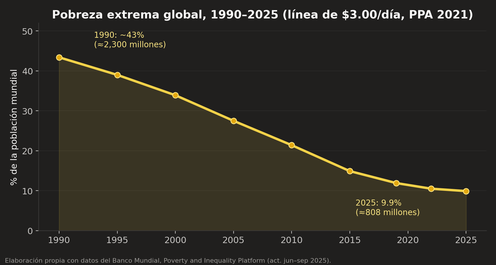
La defensa añade indicadores convergentes: la esperanza de vida global pasó de ~46 años en 1950 a ~73 hoy; la mortalidad infantil cayó a menos de una tercera parte desde 1990; la alfabetización supera el 87%. Steven Pinker (Enlightenment Now, 2018) compila docenas de estas series. El argumento tiene estructura Toulmin impecable: evidencia (las series), garantía (el sistema bajo el cual ocurre una mejora masiva y sostenida merece crédito por ella), aserción (el capitalismo es el mayor motor de prosperidad de la historia).
La letra pequeña del expediente: la atribución y el espejo Estados Unidos–China
Un abogado escrupuloso declara los límites de su propia evidencia, y el de la defensa debería declarar estos dos. Primero: el agregado mundial de pobreza no es un experimento del capitalismo — el planeta de 1990–2025 mezcla economías de mercado, híbridas y estatistas, de modo que el dato global prueba que la humanidad mejoró, no automáticamente a quién corresponde el crédito. Segundo, y más incómodo: la comparación de las últimas cuatro décadas entre las dos mayores economías corta en ambos sentidos. Estados Unidos —el capitalismo más puro a gran escala— multiplicó su ingreso real por persona por poco más de dos desde 1980; China lo multiplicó por más de diez y sacó de la pobreza extrema a unos 800 millones de personas. El mismo hecho admite dos lecturas, y ambas merecen su propio recuadro:
La lectura honesta —que anticipa la tesis de este trabajo— es que ambos recuadros tienen razón en lo que afirman y exageran en lo que excluyen: el mayor éxito económico del último medio siglo pertenece a un sistema que combinó mercado con dirección estatal masiva. Es evidencia poderosa de que el binomio funciona, y de que el mercado convive con el Estado mucho mejor de lo que la propaganda de ambos bandos admite. La sección 6.5 adjudica el resto de esta disputa.
4.2 El argumento epistémico: Hayek y el conocimiento disperso
Friedrich Hayek («The Use of Knowledge in Society», 1945) aporta el argumento intelectualmente más sólido del repertorio liberal, y merece explicarse sin tecnicismos. La información que una economía necesita para funcionar —cuánta harina querrá mañana cada panadería de cada barrio, qué refacción escasea en qué taller, cuánto vale hoy una hora de soldador en Monterrey— no está en ninguna oficina ni podría estarlo: vive repartida en millones de cabezas y cambia a cada minuto. Los precios resuelven ese problema sin que nadie lo resuelva: cuando algo escasea, su precio sube, y millones de personas que jamás se conocerán ajustan su conducta en la dirección correcta — ahorran, sustituyen, producen más. Un planificador central, por brillante y honesto que sea, no fracasa por malvado: fracasa por ciego, porque ningún comité puede recolectar y procesar lo que el sistema de precios agrega por sí solo. El derrumbe de las economías de planificación soviética fue, para la defensa, la comprobación histórica de esta idea. Ahora bien, obsérvese con precisión qué demuestra el argumento y qué no: demuestra que el mercado es insustituible como mecanismo de información y coordinación; no demuestra que el reparto de la riqueza que resulta de él sea justo ni intocable. Esa distinción —mecanismo sí, reparto revisable— es la bisagra sobre la que girará nuestra tesis.
4.3 El argumento de los incentivos y la innovación
Milton Friedman (Capitalism and Freedom, 1962; Free to Choose, 1980) añade el motor psicológico: la posibilidad de apropiarse del fruto del propio esfuerzo es el incentivo más poderoso para producir, innovar y asumir riesgos. Las vacunas, los semiconductores, la agricultura de alto rendimiento que alimenta a 8,000 millones de personas: todo ello, dice la defensa, existió porque alguien podía ganar dinero creándolo. Reducir drásticamente la recompensa —advierte— reduce la creación. William Nordhaus (Nobel 2018) aporta aquí un dato fascinante que la defensa suele citar: los innovadores capturan apenas ~2.2% del valor social que crean; el resto se derrama a los consumidores. Si eso es cierto, incluso las grandes fortunas serían la propina de un banquete que disfrutamos todos.
4.4 El argumento político: mercado y libertad
Finalmente, el argumento de la libertad: la propiedad privada dispersa el poder. Donde el Estado es el único empleador, editor y banquero, la disidencia se vuelve materialmente imposible — no hace falta censura si quien discrepa no puede comer. Hayek (Camino de servidumbre, 1944) y Friedman sostienen que ninguna sociedad políticamente libre ha existido sin una economía predominantemente de mercado. La correlación histórica los acompaña, aunque con excepciones incómodas en ambas direcciones (mercados sin libertad: Singapur, China; la socialdemocracia nórdica muestra que mercado + Estado grande + libertad conviven perfectamente).
4.5 Schumpeter: la destrucción creadora
Falta un testigo en el estrado de la defensa, quizá el más citado en la era digital: Joseph Schumpeter (Capitalismo, socialismo y democracia, 1942). Su tesis: la esencia del capitalismo no es la competencia de precios que describen los manuales, sino el vendaval perenne de destrucción creadora — el proceso por el cual la innovación (el ferrocarril, el automóvil, el smartphone) destruye industrias enteras y crea otras nuevas. Los monopolios temporales del innovador no son, para Schumpeter, una falla del sistema sino su recompensa y su motor: la perspectiva de rentas extraordinarias es lo que financia la apuesta arriesgada. Vistos así, los gigantes tecnológicos actuales serían la fase schumpeteriana normal de una revolución en curso. La defensa moderna del capitalismo digital descansa casi íntegramente en este argumento.
Anotemos, para el expediente, la respuesta que la acusación dará después: la destrucción creadora justifica el monopolio transitorio, no el atrincherado. Cuando el gigante usa su posición para comprar a todo competidor embrionario (más de 800 adquisiciones acumuladas entre las cinco grandes plataformas), levantar murallas de datos y capturar al regulador, el vendaval se detiene precisamente donde Schumpeter lo necesitaba soplando. El propio Schumpeter, por cierto, pronosticó melancólicamente que el capitalismo moriría de éxito — no derrotado por sus fallas sino burocratizado por sus triunfos. En eso, al menos, fue mal profeta; en lo demás, sigue siendo el mejor abogado del sistema.
4.6 El tablero completo de la defensa
Antes de pasar al alegato contrario, consolidemos la evidencia de la defensa en una tabla — el lector podrá volver a ella cuando la acusación presente la suya, y comparar:
| Indicador global | ≈1950/1990 | Hoy | Fuente |
|---|---|---|---|
| Pobreza extrema (% de la humanidad) | 43% (1990, línea $3.00) | 9.9% (2025) | Banco Mundial (PIP) |
| Esperanza de vida al nacer (años) | 46 (1950) | ≈73 | ONU / OWID |
| Mortalidad infantil (<5 años, por 1,000) | 93 (1990) | <37 | UNICEF / OWID |
| Alfabetización adulta (%) | 56 (1980) | >87 | UNESCO |
| Desnutrición (% población mundial) | 25% (1970) | ≈9% | FAO |
| PIB per cápita mundial (USD PPA, aprox.) | 3,300 (1950) | >17,000 | Maddison Project |
Este es un caso poderoso. Nuestra tesis no lo negará: lo absorberá. La pregunta que la defensa deja sin responder no es si el horno funciona — es quién escribió las reglas del reparto, y qué pasa con una sociedad cuando diez comensales se llevan setecientos panes. A eso vamos.
Capítulo V. El alegato de la acusación: el mejor caso contra el capitalismo realmente existente
La acusación no niega los datos de la defensa. Sostiene algo distinto: que la prosperidad creada se ha repartido de manera tan asimétrica que el sistema traiciona su propia promesa.
5.1 Evidencia: la concentración de la riqueza
El World Inequality Report 2022 (Chancel, Piketty, Saez y Zucman), construido sobre la base de datos WID.world con registros fiscales de más de cien países, resume la fotografía global: el 10% más rico de la humanidad posee el 76% de la riqueza mundial de los hogares y captura el 52% del ingreso; el 50% más pobre posee el 2% de la riqueza y captura el 8.5% del ingreso. Dentro de ese 10%, la concentración se repite fractalmente: el 1% más rico posee alrededor del 38% de la riqueza global — y capturó cerca del 38% de todo el crecimiento de la riqueza mundial entre 1995 y 2021, mientras el 50% inferior capturó el 2%.
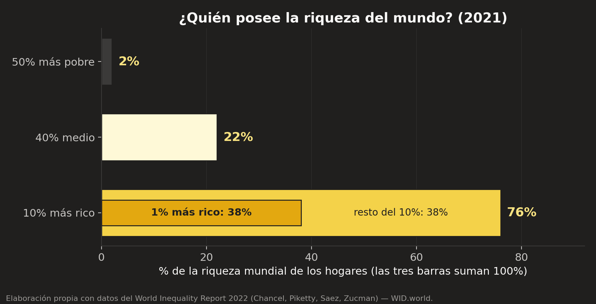
La serie temporal agrava el diagnóstico. En Estados Unidos —el corazón del régimen— la participación del 1% en el ingreso nacional antes de impuestos pasó de ~10.6% en 1980 a ~19% en la actualidad, mientras la del 50% más pobre descendió de ~19.5% a ~13%. Las dos curvas se cruzaron a mediados de los años noventa: desde entonces, tres millones de personas ganan en conjunto más que ciento sesenta y cinco millones. No es un accidente estadístico de un país: WID documenta la misma dirección —con pendientes distintas— en casi todas las economías desde 1980, precisamente el año del giro neoliberal. La desigualdad no «pasó»: se legisló, tasa impositiva por tasa impositiva, desregulación por desregulación.
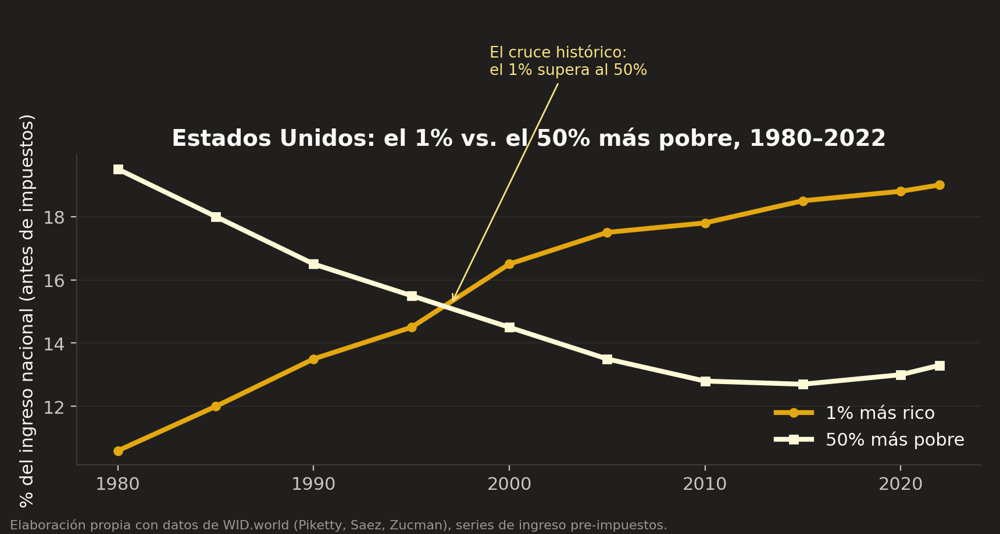
5.2 La curva del elefante: a quién sirvió la globalización
Branko Milanović y Christoph Lakner (2016) construyeron el gráfico más citado de la economía contemporánea: el crecimiento del ingreso real entre 1988 y 2008 para cada percentil de la distribución global. Su forma de elefante cuenta tres historias a la vez: (1) las clases medias emergentes de Asia —el lomo del elefante— ganaron 60–80%: es la salida de la pobreza que celebra la defensa, y es real; (2) las clases medias-bajas de los países ricos —donde la trompa baja— quedaron estancadas: son los perdedores de la deslocalización, y su resentimiento alimenta las convulsiones políticas de Occidente; (3) el 1% global —la punta de la trompa— ganó ~65%: la globalización tuvo ganadores en la base asiática y en la cúspide financiera, con un valle de estancamiento en medio.
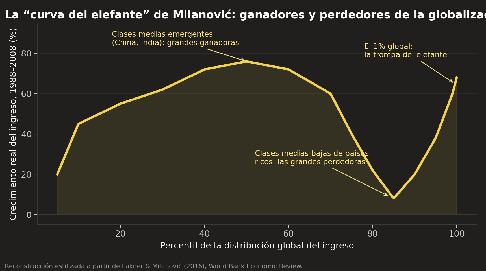
5.3 El mecanismo: r > g y la herencia del capital
Thomas Piketty (El capital en el siglo XXI, 2013) propuso la ley de movimiento que explica la tendencia: cuando la tasa de rendimiento del capital (r, históricamente 4–5%) supera a la tasa de crecimiento de la economía (g, típicamente 1–3%), la riqueza existente crece más rápido que los ingresos del trabajo, y el patrimonio heredado domina progresivamente al mérito. El capitalismo, abandonado a su inercia, no converge hacia la meritocracia: converge hacia el patrimonialismo. La «edad de oro» igualitaria de 1945–1979 no refutó la ley — la suspendió mediante guerras, inflación e impuestos confiscatorios que destruyeron o gravaron las grandes fortunas. Cuando esos frenos se retiraron en 1980, r > g volvió a operar, y las curvas del apartado anterior son su firma.
5.4 El desacople entre productividad y salario
El Economic Policy Institute documenta que en EE.UU., entre 1979 y 2024, la productividad por hora creció más de 80% mientras la compensación real del trabajador típico creció alrededor de 30%. Durante las tres décadas anteriores (1948–1979) ambas curvas habían crecido juntas. La brecha entre ellas —valor producido y no pagado al trabajo— fluyó a beneficios corporativos y a la cima de la escala salarial: la razón entre la paga de un CEO y la del trabajador promedio en las grandes corporaciones estadounidenses pasó de ~20:1 en 1965 a cerca de 290:1 en la actualidad. Para la acusación, este es el punto donde el argumento de Friedman («cada quien recibe el fruto de su esfuerzo») se quiebra empíricamente: durante cuarenta años el esfuerzo creció y el fruto se fue a otra parte.
5.5 La captura política: cuando la riqueza compra las reglas
El argumento más grave no es económico sino político. Gilens y Page (Princeton/Northwestern, 2014) analizaron 1,779 decisiones de política pública en EE.UU. y encontraron que las preferencias del ciudadano promedio tienen un efecto «cercano a cero» sobre la probabilidad de adopción de una política, mientras las preferencias de las élites económicas y los grupos de interés empresariales predicen fuertemente el resultado. Si la riqueza extrema compra la legislación —incluidas las leyes fiscales que la protegen—, la desigualdad deja de ser un resultado del juego para convertirse en quien redacta el reglamento. Es el punto donde la desigualdad amenaza no solo a la justicia, sino a la democracia misma: la promesa de «una persona, un voto» se degrada en «un dólar, un voto».
5.6 Las externalidades: la factura no cobrada
Finalmente, la contabilidad del sistema omite costos que alguien paga: la crisis climática es, en palabras del economista Nicholas Stern, «la mayor falla de mercado de la historia» — los beneficios de emitir carbono se privatizaron durante dos siglos y el costo se transfirió a la atmósfera común y a las generaciones futuras. Lo mismo aplica, a menor escala, a la precarización laboral de las plataformas, a las crisis financieras rescatadas con impuestos y a la erosión fiscal de los paraísos: Zucman estima que cerca del 8% de la riqueza financiera mundial de los hogares se aloja en jurisdicciones opacas, fuera del alcance de cualquier redistribución.
5.7 La región más desigual: América Latina en el expediente
América Latina merece página propia: es, junto con África austral, la región más desigual del planeta, y lo es desde la colonia — la desigualdad latinoamericana es más vieja que el capitalismo industrial, herencia de la encomienda, la hacienda y la exclusión racializada, lo que recuerda que el capitalismo no inventó la concentración: la heredó, la monetizó y, en su fase neoliberal, la profundizó. Los Ginis latinoamericanos (Brasil ~0.52, Colombia ~0.55, México ~0.40–0.47 según fuente y ajuste) duplican los europeos (~0.25–0.30). El dato regional más citado proviene de la CEPAL y del WID: el 1% más rico de América Latina captura alrededor del 25% del ingreso total — la participación más alta del mundo. Y la fiscalidad, lejos de corregir, consagra: la recaudación tributaria promedio de la región (≈21% del PIB) es dos tercios de la OCDE (≈34%), descansa en impuestos al consumo que pagan proporcionalmente más los pobres, y prácticamente no grava herencias ni patrimonio. La desigualdad latinoamericana no es un accidente del mercado: es una arquitectura fiscal con siglos de mantenimiento.
5.8 La cúspide de la cúspide: los milmillonarios
El vértice extremo de la distribución exhibe la dinámica con máxima nitidez. La riqueza agregada de los milmillonarios del mundo pasó de menos del 1% del PIB mundial en 1987 a más del 13–14% en la actualidad (WID; listas de Forbes como insumo): creció más de diez veces su peso relativo en una generación. Durante la pandemia —la mayor contracción económica en un siglo para el trabajo— esa riqueza agregada aumentó en billones de dólares, impulsada por la valorización de activos financieros que las políticas monetarias de rescate infló. Y la tasa impositiva efectiva de esa cúspide es regresiva: el estudio de Zucman para el G20 (2024) estima que los milmillonarios pagan en promedio 0.0–0.5% de su riqueza en impuestos personales anuales — menos, en proporción a su capacidad económica real, que sus propias secretarias, para usar la fórmula célebre de Buffett. La acusación descansa: un sistema donde el estrato que más tiene es el que proporcionalmente menos contribuye no es un mercado libre; es un régimen fiscal capturado.
Capítulo VI. Los indicadores bajo el microscopio
Detengámonos un momento aquí, porque hay algo importante que suele pasarse por alto: buena parte del desacuerdo entre defensa y acusación no es sobre los hechos, sino sobre qué regla usamos para medirlos.
6.1 Pobreza absoluta vs. pobreza relativa
La pobreza absoluta mide contra un umbral fijo de subsistencia: la línea internacional del Banco Mundial, actualizada en junio de 2025 de $2.15 a $3.00 diarios por persona (PPA 2021). Con esa vara, el mundo mejora espectacularmente (Figura 1). La pobreza relativa mide contra el nivel de vida de la propia sociedad (típicamente, menos del 50–60% del ingreso mediano): captura la exclusión, no solo la inanición. Con esa vara, varios países ricos empeoran. Ninguna de las dos es «la correcta»: miden cosas distintas. La actualización de 2025 ilustra la sensibilidad del indicador: al pasar a $3.00, el número de pobres extremos de 2022 se revisó de 713 a 838 millones — 125 millones de personas entraron a la pobreza por decreto metodológico, sin que su vida cambiara. Las tendencias, no obstante, se mantienen: bajo cualquier línea razonable, la pobreza extrema global cae desde 1990. Un dato adicional matiza el triunfalismo: con la línea de $8.30 diarios —la relevante para países de ingreso medio-alto como México— unos 3,700 millones de personas, casi la mitad de la humanidad, siguen siendo pobres.
6.2 El coeficiente de Gini: potencia y ceguera
El Gini (Corrado Gini, 1912) resume toda la distribución en un número entre 0 (igualdad perfecta) y 1 (una persona lo tiene todo). Su virtud es la comparabilidad; su defecto, la ceguera ante los extremos: es relativamente insensible a lo que ocurre en el 1% superior —justo donde ocurre la acción de las últimas décadas— y las encuestas de hogares en que suele calcularse capturan mal a los muy ricos (los millonarios rara vez contestan la ENIGH, y cuando contestan, subreportan). Por eso la literatura moderna lo complementa con top income shares construidas con registros fiscales (el método Piketty-Saez) y con la razón de Palma (ingreso del 10% superior entre ingreso del 40% inferior), más sensible a las colas.
6.3 Riqueza vs. ingreso: dos desigualdades distintas
El ingreso es un flujo (lo que se gana al año); la riqueza es un acervo (lo que se posee). La desigualdad de riqueza es siempre mucho mayor —la mitad de la humanidad posee prácticamente nada neto— y es la relevante para la hipótesis H3, porque el poder económico y político proviene del acervo, no del flujo. Un régimen fiscal puede gravar fuertemente el ingreso y dejar intacta la dinámica r > g si no toca al patrimonio: es exactamente lo que hacen casi todos los sistemas fiscales actuales.
6.4 Movilidad social: la promesa medible del mérito
La defensa del capitalismo descansa moralmente en la movilidad: la desigualdad sería aceptable si cualquiera pudiera ascender. La evidencia la incomoda: la «curva del Gran Gatsby» (Miles Corak) muestra que a mayor desigualdad, menor movilidad intergeneracional. Raj Chetty (Harvard, proyecto Opportunity Insights, con datos fiscales de decenas de millones de personas) encontró que la probabilidad de que un estadounidense nacido en el quintil inferior alcance el superior ronda el 7.5%, y que la fracción de hijos que ganan más que sus padres cayó de ~90% (nacidos en 1940) a ~50% (nacidos en 1980). En México, el CEEY (Centro de Estudios Espinosa Yglesias) estima que de cada 100 personas nacidas en el quintil más pobre, alrededor de 49 permanecen ahí toda su vida y solo ~2–3 alcanzan el quintil más rico. La escalera existe, pero le faltan peldaños exactamente donde la desigualdad es mayor.
| Indicador | Qué mide | Fortaleza | Limitación |
|---|---|---|---|
| Pobreza absoluta ($3.00/día) | Subsistencia mínima | Comparable globalmente; larga serie | Umbral bajo; sensible a PPA y revisiones |
| Pobreza multidimensional (CONEVAL) | Ingreso + 6 carencias sociales | Rica en política pública; estándar internacional (Alkire-Foster) | Serie corta (2008/2016– ); compleja de comunicar |
| Gini | Desigualdad de toda la distribución | Un solo número; comparable | Ciego a los extremos; depende de encuestas |
| Top shares (1%, 10%) | Concentración en la cúspide | Usa registros fiscales; capta a los ricos | Requiere datos fiscales de calidad |
| Razón de Palma | 10% superior vs 40% inferior | Sensible a colas; intuitiva | Ignora la clase media |
| Movilidad intergeneracional | Igualdad de oportunidades | Mide la promesa meritocrática | Requiere datos vinculados de dos generaciones |
6.5 Las guerras de la medición: Roser vs. Hickel, Deaton y la honestidad estadística
El lector debe saber que hasta los datos «duros» de este trabajo tienen un frente de batalla académico. El más ilustrativo enfrentó a Max Roser (Our World in Data) y Steven Pinker contra el antropólogo económico Jason Hickel, alrededor de 2019: Hickel sostuvo que la narrativa del progreso descansa en una línea de pobreza ($1.90 entonces) tan baja que resulta moralmente irrelevante, que con líneas más dignas ($7.40) el número absoluto de pobres creció durante décadas, y que atribuir al «capitalismo» la mejora china es incómodo para la tesis liberal, pues ocurrió bajo un Estado que controla la banca, la tierra y los sectores estratégicos. Roser y el Banco Mundial respondieron que bajo cualquier línea la proporción de pobres cae, que las mejoras en salud y educación son independientes de la línea monetaria, y que negar el progreso desarma la política pública. El premio Nobel Angus Deaton (El gran escape, 2013) ocupa la posición que este trabajo adopta: el progreso es real Y las cifras globales tienen márgenes de error enormes (las PPA se revisan y mueven a cientos de millones de personas de un lado a otro de la línea, como se vio en 2025), por lo que la certeza militante de ambos bandos es estadísticamente injustificable. Moraleja metodológica: usamos niveles con humildad y tendencias con más confianza, porque las tendencias sobreviven a las revisiones que los niveles no.
El frente de batalla tiene un segundo teatro, más reciente y más incómodo para la acusación, que la honestidad exige subir del anexo al cuerpo del texto: la magnitud misma de la concentración estadounidense está en disputa técnica. Gerald Auten y David Splinter (economistas del Tesoro y del Congreso de EE.UU.), trabajando con los mismos registros fiscales que Piketty y Saez, concluyen que la participación del 1% después de impuestos y transferencias apenas habría crecido desde los años sesenta — la diferencia está en cómo se imputan los ingresos que no aparecen en las declaraciones (pensiones, seguros de salud, ingreso corporativo retenido). En paralelo, Bruce Meyer y James Sullivan sostienen que la desigualdad de consumo — quizá la vara más cercana al bienestar material — ha crecido mucho menos que la de ingreso. Este trabajo toma posición declarada: usa las series antes de impuestos, donde el desacuerdo Auten-Splinter es menor y la dirección del aumento es común a ambos bandos; y responde a la vara del consumo con la distinción del 6.3 — la hipótesis H3 versa sobre riqueza y poder, no sobre canastas de consumo, y la concentración patrimonial no está en disputa en ninguna de las dos literaturas. Pero el lector debe saber que si la pregunta fuera «¿cuánto creció la desigualdad de ingreso disponible en EE.UU.?», la respuesta académica honesta hoy es: menos de lo que dice el número más citado, y más de lo que dice el más escéptico.
6.6 El tablero de indicadores para el caso México
Cerremos el capítulo fijando el tablero exacto con el que se jugará el capítulo IX — definido antes de mirar los resultados, como exige el rigor metodológico (pre-registro informal de la prueba):
| Indicador | Fuente | Periodo N (neoliberal) | Periodo P (2018–2024) |
|---|---|---|---|
| Pobreza por ingresos (%) | CONEVAL, serie 1992–2022 | Disponible | Disponible |
| Pobreza multidimensional (%) | CONEVAL 2016–2022; INEGI 2024 | 2016–2018 | 2018–2024 |
| Pobreza extrema (%) | CONEVAL/INEGI | Disponible | Disponible |
| Gini del ingreso de hogares | ENIGH (INEGI) | Disponible | Disponible |
| Salario mínimo real | CONASAMI + INPC | 1982–2018 | 2019–2025 |
| Crecimiento del PIB (promedio anual) | INEGI / Maddison | 1983–2018 | 2019–2024 |
| Carencias sociales (6 dimensiones) | CONEVAL/INEGI | 2016–2018 | 2018–2024 |
6.7 Un indicador desde la trinchera: la inclusión financiera
Cerramos la caja de herramientas con un indicador que este autor conoce desde su construcción misma, y que el debate distributivo suele omitir: la inclusión financiera — el acceso y uso efectivo de cuentas, crédito, seguros y ahorro formal. Su relevancia para nuestra tesis es doble. Primero, como termómetro: la exclusión financiera es la desigualdad en su forma más operativa — quien no tiene cuenta paga más por todo (comisiones de remesas, agiotistas al 10% mensual, imposibilidad de historial crediticio), no puede amortiguar emergencias y queda fuera del circuito donde la riqueza se acumula; la pobreza sin servicios financieros no es solo carencia: es una máquina de permanencia en la carencia. Segundo, como mecanismo de política: las transferencias del Periodo P mexicano se dispersan en cuentas del Banco del Bienestar — la bancarización forzada por la política social ha sido, de hecho, el mayor empujón de inclusión de la historia del país, con todos los matices de calidad y uso que un especialista señalaría.
Los números mexicanos, medidos por la ENIF (la Encuesta Nacional de Inclusión Financiera que la CNBV y el INEGI levantan desde 2012, en cuyo diseño original participó el autor): la tenencia de al menos un producto financiero formal entre adultos pasó de ~56% (2012) a ~76% (2024), y la tenencia de cuenta de ~35% a ~63% en el mismo lapso — avance real, que aún deja a uno de cada tres adultos fuera y esconde brechas persistentes de género (–8 a –10 puntos para las mujeres en tenencia de cuenta, aunque cerrándose), de territorio (la banca se concentra donde ya hay dinero) y de uso (tener cuenta no es usarla: el efectivo sigue dominando el gasto cotidiano). El Global Findex del Banco Mundial permite la comparación externa: México bancariza menos que Brasil o Chile a paridad de ingreso — otra manifestación de la arquitectura extractiva que el capítulo V describió, pues un sistema bancario oligopólico con las comisiones más rentables de la región tiene débiles incentivos para perseguir cuentas pequeñas. La lección metodológica del indicador es la de todo el capítulo: ninguna cifra distributiva se entiende sin preguntar quién queda fuera de ella y por diseño de quién.
Capítulo VII. El tribunal de la filosofía: ¿qué distribución es justa?
Los datos dicen qué pasó; no pueden decir qué debería pasar. Para eso hay que subir un piso: al de la filosofía política. Aristóteles diría una cosa, Kant otra, y ambos tendrían razón — desde distintos supuestos.
7.1 Nozick: la justicia como historia limpia de transacciones
Robert Nozick (Anarquía, Estado y utopía, 1974) ofrece la defensa filosófica más rigurosa de la desigualdad: una distribución es justa si llegó a existir justamente — adquisición inicial legítima + transferencias voluntarias = título válido, sin importar cuán desigual sea el resultado. Su experimento mental de Wilt Chamberlain es célebre: si un millón de personas paga voluntariamente 25 centavos por ver jugar a Chamberlain, éste termina rico y nadie fue forzado; redistribuir después es, dice Nozick, tratar el fruto del trabajo ajeno como propiedad colectiva — «los impuestos son trabajo forzado». Es el respaldo filosófico del capitalismo sin límites, y hay que tomarlo en serio.
Pero el argumento tiene dos grietas que el propio marco de Nozick abre. Primera: la cláusula de la adquisición inicial. ¿Qué gran fortuna del mundo real tiene una historia limpia hasta el origen? Las adquisiciones fundacionales del capitalismo —cercamientos, colonias, esclavitud, concesiones amañadas— violan el propio principio de Nozick, y él mismo admite que ello exigiría un «principio de rectificación» cuyo alcance nunca desarrolló. Segunda: Chamberlain juega solo en el ejemplo. En la economía real, ninguna fortuna se produce en el vacío: se produce sobre carreteras públicas, cortes que hacen cumplir contratos, trabajadores educados por escuelas públicas, ciencia básica financiada con impuestos e internet, inventado por agencias estatales. La transacción es voluntaria; la infraestructura que la hace posible es colectiva.
7.2 Rawls: la justicia como imparcialidad
John Rawls (Teoría de la justicia, 1971) propone el experimento mental más influyente del siglo XX: diseñemos las reglas de la sociedad detrás de un velo de ignorancia — sin saber si naceremos ricos o pobres, talentosos o no, en Polanco o en la montaña de Guerrero. ¿Qué reglas elegiría un ser racional que podría ser cualquiera? Rawls responde: libertades básicas iguales para todos y, en lo económico, el principio de diferencia: las desigualdades solo son admisibles si benefician a los que menos tienen (por ejemplo, si el incentivo al innovador termina mejorando la posición de los más pobres). Nótese la elegancia: Rawls no prohíbe la desigualdad — la pone a prueba. La pregunta rawlsiana para nuestros datos es letal: ¿la participación del 1% pasando de 10% a 19% mientras el 50% inferior cae, mejora la posición de los que menos tienen? Si la respuesta es no —y las series del capítulo V sugieren que es no—, esa desigualdad es injusta incluso para quien acepta desigualdades.
Hay un segundo argumento rawlsiano, menos citado y más profundo: los talentos mismos —la inteligencia, la energía, incluso la disposición al esfuerzo— son resultado de una lotería natural y social que nadie merece. Nadie eligió sus genes ni la familia que le leyó cuentos. Si la base del mérito es inmerecida, el mérito no puede justificar reclamos absolutos sobre el producto social. Esto no anula el esfuerzo — lo pone en contexto: el esfuerzo opera sobre un capital heredado (biológico, familiar, social) que es, en el sentido moralmente relevante, común.
7.3 El punto de apoyo de nuestra tesis: la co-producción social de la riqueza
Aquí converge la intuición central de este trabajo, que el usuario de esta investigación formuló así: «la sociedad, al final, fue quien lo hizo rico». La filosofía le da nombre y linaje. Herbert Simon (Nobel de Economía 1978) estimó que al menos el 90% del ingreso de cualquier persona en una sociedad rica se debe al «capital social» acumulado —conocimiento, instituciones, confianza— y no a su aportación individual (estimación publicada como ensayo en la Boston Review, no en sede arbitrada — la citamos con ese estatus): la misma persona, con el mismo talento y esfuerzo, en una sociedad sin ese capital, produciría una fracción mínima. Warren Buffett lo dice sin teoría: «si me hubieran depositado en Bangladesh o en Perú hace 300 años, este talento mío para asignar capital no habría valido gran cosa». Elizabeth Anderson y el propio movimiento del limitarianismo de Ingrid Robeyns (Limitarianism: The Case Against Extreme Wealth, 2024) construyen sobre esta base: si la riqueza extrema es co-producida por la sociedad, la sociedad tiene un reclamo legítimo sobre su porción — no como caridad del rico, sino como devolución de lo que siempre fue parcialmente suyo.
7.4 Marx, Polanyi y la advertencia de los extremos
Antes de fijar distancias conviene exponer con seriedad qué dijo Marx, porque pocas teorías son tan citadas y tan poco leídas. Su punto de partida (El capital, 1867) es la mercancía, que tiene dos caras: un valor de uso (la silla sirve para sentarse) y un valor de cambio (la silla se intercambia por cierta cantidad de abrigos, de trigo, de dinero). ¿Qué hace conmensurables a cosas tan distintas — qué tienen en común una silla y un abrigo para poder compararse? La respuesta de Marx, heredada de Smith y Ricardo y llevada al límite: el trabajo humano socialmente necesario que cada una lleva incorporado. El valor, en esta teoría, no cae del cielo ni brota de la máquina: lo produce el trabajo — la máquina misma es trabajo pasado, cristalizado.
Sobre esa base se levanta el concepto central: la plusvalía. El trabajador no vende al patrón su trabajo, sino algo más sutil: su fuerza de trabajo — su capacidad de trabajar durante la jornada. Como toda mercancía, esa fuerza tiene un precio que gravita hacia su costo de producción: lo que cuesta alimentar, vestir, alojar y formar al trabajador — el salario de subsistencia. Pero la fuerza de trabajo es una mercancía única en el universo: es la única cuyo uso produce más valor del que ella misma cuesta. Si la jornada dura ocho horas y en las primeras cuatro el obrero genera valor equivalente a su salario, las cuatro restantes producen valor que él no cobra: trabajo no pagado que el dueño del capital se apropia legalmente. Esa diferencia es la plusvalía — el excedente—, y de ella salen la ganancia, la renta y el interés. Dos precisiones que el propio Marx subraya: la explotación así definida no es un abuso moral de patrones malvados, sino la aritmética normal del sistema funcionando correctamente; y el «ejército industrial de reserva» —los desempleados— es la pieza que mantiene el salario pegado al piso, porque siempre hay alguien dispuesto a ocupar el puesto por lo mismo o menos.
¿Qué queda de esto hoy? La honestidad exige decirlo en dos partes. La teoría del valor-trabajo, como teoría de los precios, fue desplazada por la revolución marginalista (el valor como utilidad subjetiva en el margen) y arrastra problemas internos reconocidos, como el célebre «problema de la transformación» de valores en precios. Pero obsérvese qué sobrevive aunque la teoría caiga: la pregunta por el excedente no depende de la metafísica del valor. El desacople entre productividad y salario documentado en la sección 5.4 —producto por hora creciendo más de 80% mientras la paga del trabajador típico crece ~30%— es, en términos contables modernos y sin ninguna premisa marxista, exactamente el fenómeno que Marx señalaba: el excedente existe, es medible, crece, y alguien que no lo produjo íntegramente se lo queda. Se puede tirar la teoría y conservar el hallazgo.
Nuestra tesis toma de Marx la pregunta por el excedente y de Polanyi la certeza del doble movimiento, pero se separa deliberadamente del socialismo de planificación central, y conviene decir por qué con la misma honestidad con que criticamos al capitalismo: el experimento soviético y sus variantes no solo fracasaron económicamente (el teorema de Hayek del conocimiento disperso se verificó con precisión cruel), sino que concentraron el poder político hasta el totalitarismo. Abolir el mercado no distribuyó el poder: lo fusionó. La lección que extraemos no es «todo o nada», sino la del capítulo III: el mejor periodo del capitalismo —1945–1979— fue precisamente el de mercado con límites fuertes. Nuestra tesis no es una novedad radical; es la restauración, actualizada, de un equilibrio que ya existió y funcionó.
7.5 El argumento utilitarista: la utilidad marginal decreciente
Hay un tercer gran marco normativo, más viejo que Rawls y Nozick, cuya aritmética favorece a nuestra tesis con una sencillez casi embarazosa: el utilitarismo (Bentham, Mill, y en su formulación económica, Pigou). Su premisa empírica es la utilidad marginal decreciente del dinero: el mismo peso vale más —en bienestar producido— cuanto más pobre es quien lo recibe. Mil pesos transforman la semana de una familia en pobreza extrema y son literalmente imperceptibles en el saldo de un multimillonario. De ahí se sigue que, a producción constante, transferir del extremo superior al inferior aumenta el bienestar agregado — la desigualdad extrema es, en términos utilitaristas, bienestar desperdiciado en escala planetaria. La investigación empírica moderna respalda la premisa: la relación entre ingreso y bienestar subjetivo es logarítmica (cada peso adicional aporta menos que el anterior), y aunque el debate Kahneman-Killingsworth (2010–2023) revisó dónde se aplana la curva, nadie discute que se aplana. El único contraargumento utilitarista serio es el de los incentivos —si el impuesto reduce la producción total, la transferencia puede empobrecer a todos—, que es exactamente la Objeción 1 del capítulo VIII, donde se responde con evidencia.
7.6 Dos voces desde el mundo hispano: Cortina y Dussel
El debate anglosajón no agota el mapa, y un trabajo escrito en español haría mal en ignorarlo. La filósofa valenciana Adela Cortina acuñó un concepto que este expediente necesita: la aporofobia — el rechazo no al extranjero ni al diferente, sino al pobre (del griego á-poros, sin recursos). Su tesis (Aporofobia, el rechazo al pobre, 2017): nuestras sociedades no desprecian al rico extranjero — lo cortejan; desprecian al pobre, incluso al compatriota, porque en una lógica de intercambio quien «no tiene nada que ofrecer» queda fuera del contrato. La aporofobia es el lubricante moral de la desigualdad: permite mirar los datos del capítulo V sin indignación, porque los perdedores han sido previamente convertidos en culpables de su suerte. El filósofo argentino-mexicano Enrique Dussel (1934–2023), padre de la Filosofía de la Liberación, añade la perspectiva estructural desde el Sur: la riqueza del centro y la pobreza de la periferia no son dos fenómenos sino uno solo visto de sus dos lados — la acumulación originaria europea se hizo, en parte decisiva, con la plata de Potosí y Zacatecas y con el trabajo esclavo americano. Para Dussel, el punto de partida de toda ética es la víctima del sistema: el criterio de una economía justa no es la eficiencia del ganador sino la producción y reproducción de la vida del último. Nuestra tesis del límite es, en su vocabulario, apenas un mínimo civilizatorio.
7.7 Síntesis del capítulo
El mapa normativo queda así: Nozick justifica la acumulación ilimitada solo bajo supuestos históricos (adquisición limpia) y sociológicos (producción individual aislada) que el mundo real no cumple. Rawls ofrece el criterio operativo — las desigualdades deben beneficiar a los que menos tienen. Simon, Buffett y Robeyns aportan la premisa fáctico-moral — la riqueza extrema es co-producida. Y la historia (1945–1979, y como veremos, México 2018–2024) aporta la prueba de viabilidad: limitar la acumulación no mata al mercado. Sobre estas cuatro columnas se construye el capítulo siguiente.
Capítulo VIII. La tesis: el capitalismo limitado
Llegó el momento de construir, con todas las piezas sobre la mesa, el argumento propio — y de someterlo a sus tres objeciones más fuertes.
8.1 La aserción y su formalización Toulmin
La tesis, en una frase: el mercado debe conservarse como mecanismo de coordinación e incentivo, pero la acumulación individual de riqueza debe tener un límite superior, operado mediante imposición progresiva al patrimonio extremo, cuya recaudación se devuelve a la sociedad co-productora. Formalizada:
| Componente | Contenido |
|---|---|
| Aserción | Debe establecerse un régimen de capitalismo limitado: por encima de cierto umbral de patrimonio, la tasa impositiva marginal sobre la riqueza crece hasta hacer prácticamente improductiva la acumulación adicional. |
| Evidencia | (i) Concentración creciente desde 1980 (cap. V); (ii) la desigualdad extrema reduce movilidad (Corak, Chetty) y captura la democracia (Gilens-Page); (iii) los periodos y países con límites fuertes (1945–1979; nórdicos; México 2018–2024) no perdieron dinamismo de mercado ni libertad. |
| Garantía | Si la riqueza extrema es co-producida socialmente, daña la igualdad política y no mejora la posición de los peor situados, entonces la sociedad tiene derecho a limitarla. |
| Respaldo | Principio de diferencia (Rawls); co-producción del 90% (Simon); limitarianismo (Robeyns); precedentes fiscales reales (tasas marginales de 91% en EE.UU. de posguerra; propuestas técnicas de Piketty y Saez-Zucman). |
| Matizador | Presumiblemente y de forma gradual: el límite debe implementarse con calibración empírica, cooperación internacional y evaluación continua — no como dogma. |
| Refutación | La tesis cede si se demostrara que el límite (a) destruye la innovación neta, (b) provoca fuga de capital incorregible, o (c) resulta técnicamente inadministrable. Las tres se examinan en 8.4. |
8.2 Qué significa «límite» en la práctica
La intuición original de esta investigación —«cuando una empresa o persona llega a tener más de cierta cantidad, el resto debe devolverse a la sociedad»— tiene tres traducciones institucionales conocidas, de menor a mayor intensidad:
- Impuesto anual progresivo al patrimonio extremo. La versión de Saez y Zucman (2019) para EE.UU.: 2% anual sobre patrimonios de más de 50 millones de dólares y 3–6% por encima de 1,000 millones. No confisca: desacelera r hasta acercarla a g, atacando directamente la ley de Piketty. Piketty mismo propone en Capital e ideología (2019) tasas que llegan a 90% para multimillonarios, combinadas con una herencia universal para todos los jóvenes.
- Impuesto a las herencias extremas. Ataca el patrimonialismo en la transmisión: protege el derecho a construir fortuna en vida y limita el derecho a fundar dinastías. Es el instrumento más defendible incluso en términos meritocráticos: nadie «merece» nacer heredero.
- El límite duro (limitarianismo pleno). Robeyns discute umbrales del orden de 10 millones de euros como «línea de riqueza» ética, por encima de la cual la tasa marginal tiende a 100%. Es la versión filosóficamente pura y políticamente más lejana; funciona mejor como horizonte regulativo que como propuesta legislativa inmediata.
Nuestra posición operativa es gradualista: comenzar por (a) y (b) con cooperación internacional —el acuerdo de tasa mínima corporativa global de la OCDE (2021) demostró que la coordinación fiscal internacional, declarada imposible durante décadas, es posible— y evaluar empíricamente antes de escalar. El destino de la recaudación importa tanto como su origen: capital social devuelto en educación, salud, infraestructura y, en la versión de Piketty, dotación universal de capital a cada ciudadano al llegar a la adultez.
8.3 Por qué esto no es socialismo (y por qué eso es una virtud, no una traición)
El capitalismo limitado conserva deliberadamente: propiedad privada, libre empresa, sistema de precios, competencia y la posibilidad de volverse rico — incluso muy rico. No hay planificación central (el teorema de Hayek queda intacto), no hay expropiación de los medios de producción, no hay partido único del proletariado. Lo único que se limita es la cola extrema de la acumulación, exactamente como ya limitamos otras libertades cuando dañan al conjunto: la libertad de expresión no incluye la difamación; la libertad de empresa no incluye el monopolio; la libertad de acumular, sostenemos, no incluye la fortuna que compra legislaturas. Quien objete que esto «castiga el éxito» debe explicar por qué las tres décadas de mayor crecimiento del capitalismo occidental ocurrieron con tasas marginales superiores al 90%, y por qué los innovadores —que según Nordhaus capturan ~2.2% del valor que crean— dejarían de innovar por capturar 1.8%.
Y si se busca la prueba viviente de que redistribuir masivamente no es abolir el mercado, basta traer a esta mesa a los países nórdicos de la sección 3.6 y sentarlos junto a los dos extremos que este trabajo compara. Un dato para desarmar prejuicios antes de la tabla: Suecia tiene más milmillonarios per cápita que Estados Unidos — el modelo nórdico no impide la fortuna; impide la miseria, y financia esa garantía recortando por vía fiscal cerca del 40% de la desigualdad que su propio mercado genera. México, en el otro extremo, recorta ~5%: su desigualdad final es casi exactamente la que el mercado dicta.
| País | Recaudación (% PIB) | Gini de mercado | Gini disponible | Recorte fiscal de la desigualdad | Gasto social (% PIB) |
|---|---|---|---|---|---|
| Dinamarca | ≈46 | 0.45 | 0.27 | ≈−40% | ≈28 |
| Finlandia | ≈43 | 0.47 | 0.27 | ≈−42% | ≈29 |
| Suecia | ≈43 | 0.43 | 0.28 | ≈−35% | ≈26 |
| Noruega | ≈41 | 0.43 | 0.26 | ≈−40% | ≈25 |
| Estados Unidos | ≈27 | 0.50 | 0.39 | ≈−22% | ≈19 |
| México | ≈17 | 0.47 | 0.44 | ≈−5% | ≈8 |
8.4 Las tres objeciones más fuertes, y nuestras respuestas
Objeción 1: «El límite mata la innovación»
Es la objeción de Friedman, y merece respuesta empírica, no retórica. Tres datos: (i) la mayor ola de innovación de la historia estadounidense —transistor, jet comercial, carrera espacial, internet embrionario— ocurrió bajo tasas marginales de 70–91%; (ii) los países nórdicos, con las cargas fiscales más altas de la OCDE, encabezan sistemáticamente los índices globales de innovación per cápita; (iii) la evidencia psicológica (desde Deci y Ryan hasta la economía conductual) muestra que más allá de cierto punto, la motivación del creador es dominantemente intrínseca —el problema, el estatus, el legado— y no marginal-monetaria: nadie funda una empresa para pasar de 20,000 a 21,000 millones. La objeción confunde el incentivo de hacerse rico —que el capitalismo limitado preserva íntegro hasta el umbral— con el incentivo de acumular sin límite, cuyo aporte marginal a la innovación no está demostrado en ninguna literatura seria.
Objeción 2: «El capital huirá»
Es la objeción con mejor evidencia a favor: el ISF francés (impuesto a la fortuna, 1989–2017) coincidió con la salida de decenas de miles de contribuyentes ricos, y varios países europeos abandonaron sus impuestos patrimoniales por baja recaudación y alta elusión. Respuesta en dos partes. Primera: el diagnóstico correcto de esos fracasos no es «no se puede gravar la riqueza» sino «no se puede gravar la riqueza unilateralmente y con mal diseño»: umbrales bajos que golpeaban a la clase media-alta, exenciones que perdonaban justo a los más ricos, y cero coordinación internacional. Segunda: la arquitectura ha cambiado — el intercambio automático de información financiera (CRS, 2017), el fin del secreto bancario suizo, la tasa mínima global de la OCDE y las propuestas de registro mundial de activos (Zucman) construyen exactamente la infraestructura que los fracasos de los noventa no tenían. La fuga es un problema de ingeniería institucional y de coordinación, no una ley de la naturaleza. Y existe el instrumento de última instancia, usado hoy por EE.UU. con la ciudadanía fiscal: gravar por nacionalidad y cobrar impuesto de salida. Una concesión más, que la sección 3.6 deja asentada: los países nórdicos lograron su igualdad sin los impuestos patrimoniales que aquí se proponen — la defensa del instrumento descansa en la nueva arquitectura de coordinación internacional, no en un precedente nórdico que no existe.
Objeción 3: «¿Quién decide el límite? Es arbitrario y abre la puerta al abuso»
Concedemos lo primero parcialmente: todo umbral es convencional — también lo son la mayoría de edad, el salario mínimo y el límite de velocidad, y a nadie le parece que su convencionalidad los invalide. La arbitrariedad se disciplina con procedimiento: umbrales fijados por órganos técnicos con mandato legal (como los objetivos de inflación de los bancos centrales), indexados y revisables, con el criterio rawlsiano como función objetivo — el límite óptimo es el que maximiza la posición de los peor situados, ni más alto ni más bajo. Lo segundo —el riesgo de abuso estatal— es la advertencia hayekiana que tomamos en serio: por eso el diseño exige contrapesos constitucionales, destino etiquetado de la recaudación y transparencia total. El riesgo de un Estado que abusa del impuesto patrimonial debe ponerse en la balanza contra el riesgo, ya materializado según Gilens y Page, de una plutocracia que abusa de su ausencia. No elegimos entre riesgo y seguridad; elegimos entre riesgos. La escuela de la elección pública (Buchanan y Tullock) merece aquí su steelman: la falla del Estado es tan real como la falla del mercado, y el mismo mecanismo de captura que Gilens y Page documentaron contra el capitalismo puede capturar al órgano que fije el límite. La respuesta no es negar el riesgo sino constitucionalizarlo — y conviene decir, con la vara de este trabajo, que México acaba de ofrecer el contraejemplo doloroso: la extinción del CONEVAL en 2024–2025 demuestra que un órgano técnico autónomo puede desaparecer por decreto. La objeción, en esa medida, queda parcialmente en pie: el capitalismo limitado exige un blindaje institucional que México aún no sabe construir.
8.5 Hoja de ruta: qué significaría el capitalismo limitado en México
Una tesis normativa gana credibilidad cuando desciende al terreno. México es un caso ideal para ilustrar el gradualismo del 8.2, porque su punto de partida fiscal es extremo: la recaudación total ronda el 16–17% del PIB — la más baja de la OCDE (promedio ≈34%) y baja incluso para América Latina. Y la estructura es reveladora:
- México no tiene impuesto federal a las herencias. Lo tuvo y lo derogó en 1962. Una fortuna de cien mil millones de pesos puede transmitirse íntegra entre generaciones con costo fiscal cercano a cero — el patrimonialismo de Piketty en estado químicamente puro. El primer paso de cualquier agenda limitarista mexicana es este, y es también el más defendible: no grava el esfuerzo de nadie vivo.
- No existe impuesto al patrimonio neto, y el predial —el impuesto a la propiedad más básico— recauda ≈0.3% del PIB contra ≈1.9% del promedio OCDE, por catastros desactualizados y captura municipal.
- La tasa marginal máxima del ISR (35%) se alcanza a ingresos relativamente modestos y es baja en perspectiva histórica y comparada; los ingresos del capital (dividendos, ganancias bursátiles) tributan efectivamente menos que los del trabajo.
- El gasto fiscal en privilegios (regímenes especiales, deducciones concentradas en los deciles altos) y la elusión mediante estructuras corporativas erosionan la base exactamente en la cúspide.
Una secuencia gradualista realista: (1) restablecer el impuesto a herencias y donaciones extremas (umbral alto — por ejemplo, exento hasta 50–100 millones de pesos — para blindarlo políticamente de la falsa alarma de que «te quitarán tu casa»); (2) modernizar catastros y predial con progresividad; (3) nuevos tramos de ISR (40–50%) para ingresos verdaderamente altos e igualación del tratamiento capital-trabajo; (4) adhesión activa a la propuesta de imposición mínima global a milmillonarios discutida en el G20 (informe Zucman, 2024, impulsado por Brasil); (5) solo entonces, y con la infraestructura de información ya construida, un impuesto al patrimonio neto extremo. Cada paso financia visiblemente capital social —el destino etiquetado del 8.2— y cada paso se evalúa antes del siguiente. Nótese la coherencia con el capítulo IX: el Periodo P movió los indicadores con instrumentos pre-distributivos sin tocar casi nada de esta lista; el potencial redistributivo de México está, en términos comparados, prácticamente intacto.
8.6 Los instrumentos comparados
| Instrumento | Ataca | Precedentes reales | Riesgo principal | Lugar en la secuencia |
|---|---|---|---|---|
| Impuesto a herencias extremas | Patrimonialismo (transmisión) | EE.UU. (40%), Japón (55%), Corea (50%), Chile, Brasil | Elusión vía fideicomisos; requiere registro de beneficiarios finales | Primero |
| Predial progresivo | Riqueza inmobiliaria | Universal en la OCDE | Captura municipal; catastros | Primero-segundo |
| Tramos altos de ISR + capital = trabajo | Flujo de ingresos altos | Tasas 91% EE.UU. (1950s); nórdicos hoy ~50-55% | Planeación fiscal; migración de base | Segundo |
| Mínimo global a milmillonarios (2% patrimonio) | Stock extremo, coordinadamente | Propuesta Zucman-G20 (2024); precedente: mínimo corporativo OCDE 2021 | Requiere masa crítica de países | Tercero |
| Impuesto nacional al patrimonio neto | Stock extremo, unilateralmente | Suiza (cantonal), Noruega, España (solidaridad 2022) | Fuga si el diseño es malo (lección ISF francés) | Último, con infraestructura previa |
| Límite duro limitarista | Acumulación como tal | Ninguno moderno; horizonte regulativo | Político y constitucional | Horizonte |
Capítulo IX. El caso México: un experimento natural (1982–2025)
Pocas veces la historia ofrece condiciones tan cercanas a un experimento: un mismo país, una misma población, dos regímenes de política económica nítidamente distintos y datos oficiales de calidad para medir ambos.
9.1 Diseño del contraste
Llamaremos Periodo N (neoliberal, 1982–2018) a los sexenios de Miguel de la Madrid a Enrique Peña Nieto: apertura comercial acelerada (GATT 1986, TLCAN 1994), privatización masiva (de ~1,150 empresas públicas a menos de 200), desregulación financiera, contención deliberada del salario mínimo como ancla antiinflacionaria y política social focalizada (Solidaridad, Progresa, Oportunidades, Prospera). Y llamaremos Periodo P (limitado, 2018–2024/26) a los gobiernos de López Obrador y Sheinbaum: recuperación agresiva del salario mínimo, transferencias directas universales o cuasi-universales, reforma laboral (subcontratación, reparto de utilidades, libertad sindical) y aumento de la recaudación efectiva a grandes contribuyentes sin crear nuevos impuestos. Precisión conceptual honesta: el Periodo P no implementó nuestra tesis —no hay impuesto patrimonial en México—; es un capitalismo pre-distributivamente corregido (salarios) más redistribución (transferencias). Lo usamos como prueba de la hipótesis H2 —las reglas distributivas importan—, no como implementación de H3. Una precisión sobre la ventana temporal: las series de salarios, precios, fortunas y mercados llegan a 2025; la medición distributiva (pobreza y Gini) cierra en 2024 porque la ENIGH es bienal — el levantamiento siguiente ocurrirá en 2026 y se publicará en 2027.
9.2 El saldo del Periodo N: el estancamiento distributivo
La promesa del modelo fue explícita: la apertura y la disciplina macroeconómica traerían crecimiento, y el crecimiento derramaría bienestar. El primer término falló: el PIB creció en promedio ~2.3% anual entre 1983 y 2018 —alrededor de 0.8% per cápita—, contra ~6.5% del periodo de industrialización 1950–1981. El segundo término falló con el primero: la pobreza por ingresos, que la serie de CONEVAL permite seguir desde 1992, estaba en 53.1% ese año, se disparó a 69% con la crisis de 1995, descendió hasta ~42.9% en 2006 y regresó a ~49.9% en 2018. Treinta y seis años después, uno de cada dos mexicanos seguía siendo pobre por ingresos — prácticamente la misma proporción del inicio. El salario mínimo real perdió cerca de 70% de su poder de compra entre 1980 y mediados de los noventa y permaneció congelado en ese sótano por dos décadas más: fue una decisión de política, documentada en los criterios oficiales de la época, no un accidente.
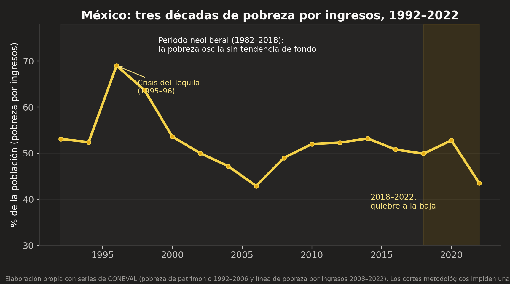
9.3 El acta de nacimiento de las grandes fortunas: la privatización
Si el estancamiento fue el saldo del Periodo N para la mayoría, su saldo para la cúspide fue el opuesto exacto — y aquí este trabajo puede ofrecer la evidencia más directa de toda su demostración, porque las grandes fortunas mexicanas tienen fecha y acta de nacimiento verificables: las listas anuales de Forbes (publicadas desde 1987) permiten observar quién existía como milmillonario antes de cada privatización y quién apareció después. El hallazgo, documentado por el semanario Proceso con las propias listas: de los 16 milmillonarios mexicanos de Forbes en 2018, 14 ingresaron a la lista durante el sexenio de Carlos Salinas de Gortari (1988–1994) — los años de la privatización—, y sus fortunas sumadas equivalían a ~14% del PIB nacional, más que todo el presupuesto federal de desarrollo social de ese año. La propia Forbes lo había explicado en 1993 con franqueza memorable: las empresas de los multimillonarios mexicanos «tienden a estar integradas, autofinanciadas y siempre bien relacionadas con el gobierno».
El caso paradigmático: Slim y Telmex
Carlos Slim era, hacia 1990, un empresario exitoso de segunda línea — dueño de un conglomerado (Carso) construido comprando barato en la crisis de 1982, pero ausente de toda lista de Forbes. En diciembre de 1990, el gobierno de Salinas le adjudicó el control de Teléfonos de México: el consorcio de Carso con France Télécom y Southwestern Bell pagó 1,760 millones de dólares por el paquete de control de un monopolio nacional — la aportación de Carso por la porción de control rondó los 443 millones —, con años de exclusividad regulatoria por delante. El efecto fue instantáneo y está impreso: en la lista de 1991, Slim debuta con 1,700 millones de dólares. Para 2007 eran 59,000 millones; entre 2010 y 2013 fue el hombre más rico del planeta; en 2025, Bloomberg y Forbes lo sitúan alrededor de 100,000 millones — un factor de ~59 veces sobre su debut, construido sobre el activo que 60 años de tarifas telefónicas de todos los mexicanos habían levantado y que la Cofeco y la OCDE documentarían después como fuente de sobreprecios al consumidor por el poder monopólico conservado (la OCDE estimó en 2012 pérdidas de bienestar de ~1.8% del PIB anual por la falta de competencia en telecomunicaciones entre 2005 y 2009).
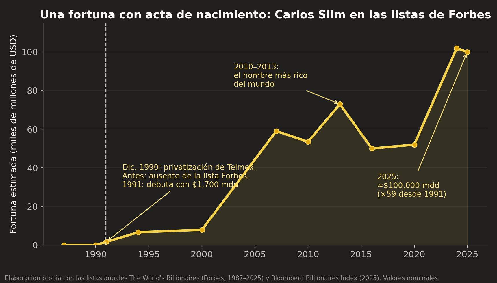
El patrón, no la anécdota
El caso Slim sería anécdota si fuera único. No lo es — es la regla de la cúspide mexicana, y cada fila de la siguiente tabla es verificable en hemerografía y en las listas de Forbes:
| Persona / familia | Activo público recibido | Sexenio | El dato duro |
|---|---|---|---|
| Carlos Slim | Telmex (1990) | Salinas | Ausente de Forbes hasta 1991; debuta con $1.7 mil mdd tras Telmex; ≈$100 mil mdd en 2025 (×59). |
| Familia Larrea (Jorge → Germán) | Minera de Cananea y acciones de La Caridad (1988–1990); concesión ferroviaria Ferromex (1997) | Salinas / Zedillo | Cananea adjudicada en $475 mdd tras anularse una subasta previa ganada en $975 mdd. Hoy Grupo México controla ~80–90% del cobre nacional; fortuna 2025 entre ~$28 y $43 mil mdd según el precio del cobre. |
| Ricardo Salinas Pliego | Imevisión → TV Azteca (1993) | Salinas | La segunda cadena nacional de TV, comprada al Estado en licitación cuestionada; fortuna 2025 ≈$13–16 mil mdd; en 2025 la Suprema Corte resolvió en su contra litigios fiscales de décadas por decenas de miles de millones de pesos. |
| Roberto Hernández y Alfredo Harp | Banamex (1991) | Salinas | Banco comprado al Estado en ~$3.2 mil mdd; vendido a Citigroup en 2001 en $12.5 mil mdd, operación estructurada en bolsa que no pagó impuestos — célebre en la historia fiscal mexicana. |
| Familia Bailleres | Refractarios Mexicanos (1988) y reservas mineras desincorporadas | De la Madrid / Salinas | Peñoles consolidó su posición minera con activos y reservas federales desincorporadas; la fortuna pasó íntegra por herencia en 2022. |
| María Asunción Aramburuzabala | — (herencia: Grupo Modelo) | — | La única mujer habitual del top-10 mexicano de Forbes. Que la única vía femenina comprobada a la cúspide sea la herencia es, en sí mismo, un dato sobre el sistema. |
La línea de tiempo completa: la «Salinastroika» y sus herederos
La revista Forbes acuñó en 1994 un término para lo que sus propias listas registraban: «Salinastroika» — el guiño a la perestroika soviética con que describió la fabricación acelerada de multimillonarios mexicanos. Los números del fenómeno: cuando Salinas asumió en 1988, una sola familia mexicana figuraba en la lista mundial (los Garza Sada, con 2,000 mdd); al cerrar su sexenio en 1994, México tenía 24 milmillonarios y era el cuarto país del mundo con más miembros en la lista — detrás solo de Estados Unidos, Alemania y Japón, y con la mitad de su población en pobreza. Las trayectorias documentadas de las principales fortunas cuentan, cada una, su propia variante del patrón — con el debut en Forbes siempre fechado inmediatamente después del activo estatal recibido: la minería y el ferrocarril adjudicados (Larrea, cuyo debut de 1994 ya es posterior a las minas y anterior a Ferromex), la televisora estatal licitada (Salinas Pliego), la herencia como única vía femenina (Aramburuzabala), las concesiones carreteras cuyas pérdidas absorbió el erario (Peñaloza) y el banco privatizado, quebrado y rescatado con dinero público vía Fobaproa (Del Valle con Bital). Dos casos más merecen nota: Banamex —comprado al Estado y revendido a Citigroup sin pagar impuestos— y el caso espejo de Televisa, una fortuna de concesiones de espectro que se desinfla cuando la tecnología erosiona el foso concesionado: las fortunas de concesión viven y mueren con la concesión, no con el mérito. La Tabla 5b levanta el acta completa:
Y para responder con precisión la pregunta de quiénes son hoy los quince más ricos y de dónde viene cada fortuna, la siguiente tabla cruza la lista Forbes 2024 con el año de primera aparición de cada persona o dinastía y su origen dominante. La clasificación es honesta en ambas direcciones: registra también las fortunas mayormente de mercado, porque el argumento de esta sección no es que toda riqueza mexicana sea privatización — es que la cúspide extrema lo es en proporción extraordinaria:
| # | Persona (Forbes 2024) | Fortuna 2024 (mmdd) | Debut en Forbes | Origen dominante |
|---|---|---|---|---|
| 1 | Carlos Slim | 102 | 1991 | Privatización: Telmex (1990) |
| 2 | Germán Larrea | ≈27.6 | 1994 (Jorge Larrea) | Privatización: Cananea (1990) + concesión Ferromex (1997) |
| 3 | Ricardo Salinas Pliego | ≈13.4 | 1994 | Privatización: Imevisión/TV Azteca (1993) |
| 4 | Alejandro Bailleres | 8.1 | 1994 (Alberto) | Mercado minero con activos desincorporados; herencia (2022) |
| 5 | M. Asunción Aramburuzabala | 6.3 | 1994 (Pablo) | Herencia: Grupo Modelo — única mujer del top-10 |
| 6 | Juan D. Beckmann | ≈4.4 | dinastía Cuervo | Mercado/herencia (tequila) |
| 7 | Carlos Hank Rhon | ≈4.2 | 1992 (familia Hank) | Banca y contratos ligados al poder político (Grupo Hermes) |
| 8 | Antonio del Valle | ≈3.3 | 1992 | Banca privatizada (Bital, rescatada por Fobaproa) + química |
| 9 | Rufino Vigil | ≈3.2 | años 2000 | Mercado: acero (Industrias CH) |
| 10 | Fernando Chico Pardo | ≈3.1 | años 2000 | Privatización aeroportuaria: Asur (1998, Zedillo) |
| 11 | Familia Coppel | ≈2.4 c/u | 2024 | Mercado: retail y banco popular |
| 12 | Roberto Hernández | ≈1.8 | 1992 | Privatización: Banamex (1991), vendido a Citi (2001) |
| 13 | David Peñaloza Alanís | ≈1.7 | 1994 (padre, Tribasa) | Concesiones carreteras + rescate carretero (1997) |
| 14 | Cynthia Grossman | ≈1.5 | herencia | Herencia: embotelladoras (Grupo Continental) |
| 15 | Alfredo Harp Helú | ≈1.2 | 1992 | Privatización: Banamex (1991) |
Tres precisiones de rigor. Primera: nada de lo anterior es ilegal, y este trabajo no imputa delitos — imputa diseño: subastas anuladas y readjudicadas a la baja, exclusividades regulatorias, y reguladores capturados son decisiones de Estado, no fuerzas de mercado. Es la versión mexicana, con nombres y montos, del hallazgo de Gilens y Page del capítulo V. Segunda: el ciclo se cerró con el Fobaproa (1995–1998), cuando las pérdidas de la banca recién privatizada —varios de cuyos dueños figuraban ya en Forbes— se convirtieron en deuda pública por ~552 mil millones de pesos de la época (≈15% del PIB), que los contribuyentes siguen amortizando a través del IPAB: ganancias privatizadas en 1991, pérdidas socializadas en 1998 — el patrón global de 2008, ensayado en México con una década de anticipación. Tercera: existe la defensa de estas privatizaciones —Rogozinski, quien las ejecutó, argumenta que las empresas eran ineficientes y deficitarias y que el Estado no debía administrarlas— y es parcialmente atendible: el error de la crítica simplista es condenar la privatización en sí; el señalamiento preciso, y el que esta sección documenta, es haber transferido monopolios con su poder de mercado intacto a precios y condiciones que garantizaban la fortuna del comprador. Vender una paraestatal puede ser buena política; regalar su renta monopólica es fabricar oligarcas por decreto. Para la tesis de este trabajo, la conclusión es directa: si el origen de la cúspide patrimonial mexicana es en esta medida estatal —concesión, exclusividad, rescate—, el argumento nozickiano del «fruto del esfuerzo en transacciones voluntarias» no aplica ni siquiera en sus propios términos, y el reclamo social de devolución (capítulo VII) tiene aquí su caso más limpio.
9.4 El saldo del Periodo P: salario y trabajo
Entre 2018 y 2025, el salario mínimo pasó de 88.36 a 278.80 pesos diarios: un aumento real superior al 100% (más que duplicación del poder de compra), tras cuarenta años de erosión — sin el desempleo ni la espiral inflacionaria que la ortodoxia local pronosticó (la inflación de 2022–23 fue global, y México la registró por debajo de EE.UU. en varios trimestres). Los resultados distributivos, medidos con la misma metodología multidimensional creada en el periodo anterior: la pobreza pasó de 41.9% (2018) a 29.6% (2024) — 13.4 millones de personas salieron de la pobreza; la pobreza extrema, de 7.0% a 5.3%; y el coeficiente de Gini del ingreso corriente trimestral de los hogares, de 0.426 (2018) a 0.391 (2024) — el mínimo histórico de la serie ENIGH. Los análisis de descomposición del propio INEGI y de BBVA Research atribuyen el componente mayor de la mejora al ingreso laboral — es decir, al salario. El motor principal no fue el reparto: fue el trabajo mejor pagado. La propia CONASAMI lo cuantifica: el incremento del salario mínimo entre 2018 y 2024 explica alrededor de la mitad de la reducción de la pobreza del periodo (CONASAMI, 2025). Y la serie oficial de desigualdad permite separar los dos motores con precisión contable. El Gini calculado sin transferencias —la desigualdad que dicta el mercado antes de que el Estado intervenga— también descendió, de 0.475 (2018) a 0.450 (2024): eso es mejora en la distribución primaria, es decir, salario. Y la distancia entre ambas curvas, que es exactamente el efecto redistributivo de las transferencias, se ensanchó de 0.049 a 0.059. Los dos motores funcionaron a la vez, y el documento puede ahora medirlos por separado en lugar de deducirlos (INEGI, ENIGH 2024, Reporte de Resultados 23/25, Gráfica 2).
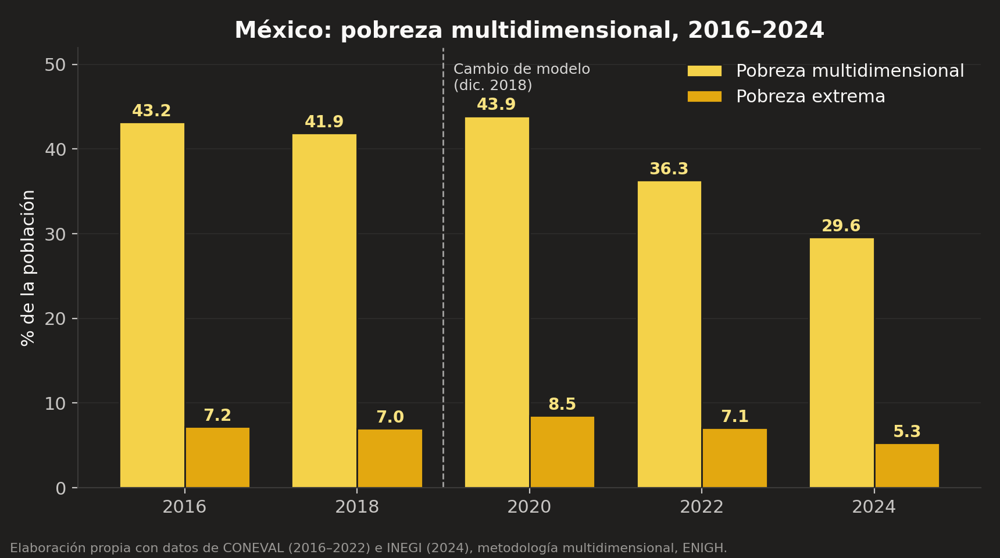
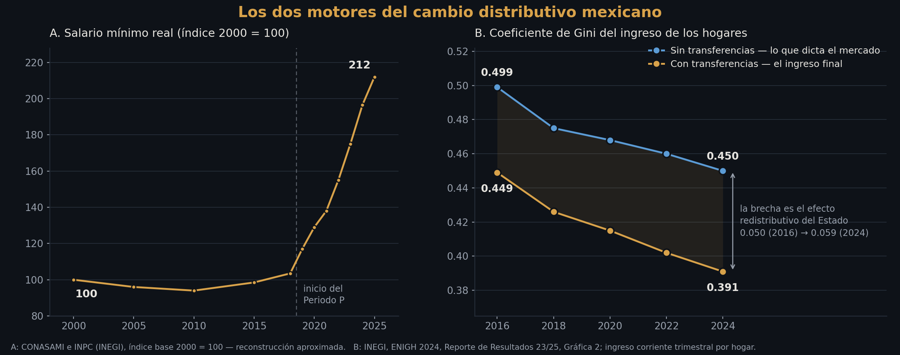
9.5 Los programas sociales: la redistribución medida
El segundo motor merece su propia sección, porque su efecto ya no es materia de opinión: es un contrafactual oficial. Desde 2008, la medición mexicana calcula la pobreza dos veces — con y sin transferencias públicas en el ingreso de los hogares —, lo que permite aislar contablemente el efecto redistributivo de los programas. El resultado de 2024 (INEGI): la pobreza con transferencias es 29.6%; sin ellas sería 32.8%. En pobreza extrema el efecto es proporcionalmente mucho mayor: 5.3% contra 6.9% — las transferencias «borran» algo más de tres puntos de pobreza y 1.6 puntos de pobreza extrema, del orden de cuatro y dos millones de personas respectivamente. La arquitectura que lo produce: la Pensión Universal de Adultos Mayores (el programa dominante, elevado a derecho constitucional en 2020), las becas educativas, la pensión de discapacidad y los programas rurales, con un gasto conjunto del orden de 2.5–3% del PIB — financiado, hasta ahora, sin reforma fiscal, mediante austeridad, eliminación de intermediarios y mayor cobro efectivo a grandes contribuyentes.
El análisis honesto exige registrar el debate técnico sobre el diseño, que es real y de dos filos. La crítica: al pasar de la focalización (Progresa/Prospera, célebre internacionalmente y evaluado durante 20 años) a la universalidad, cada peso transferido es menos «progresivo» — el CONEVAL documentó que la cobertura de los programas en el decil más pobre cayó respecto de la era Prospera, porque la pensión de adultos mayores llega también a hogares de ingresos medios y altos. La defensa: la universalidad elimina los errores de exclusión (los pobres que la focalización nunca encontraba, especialmente en zonas indígenas dispersas), suprime el clientelismo del padrón condicionado, reduce el costo administrativo y —el argumento político-institucional decisivo— convierte el apoyo en derecho difícil de revertir, en lugar de favor sexenal. Para nuestra demostración, el balance neto es el que las cifras ya dieron: cualquiera que sea el óptimo teórico del diseño, el efecto agregado medido es redistributivo, grande en la base y creciente respecto de 2018 — con un costo colateral genuino, la salud, que la sección 9.8 no permitirá olvidar. Y hay un subproducto que conecta con la sección 6.7: la dispersión de las transferencias vía Banco del Bienestar bancarizó a millones de hogares que el sistema financiero privado nunca consideró rentables — redistribución e inclusión financiera avanzando por el mismo canal.
9.6 El crecimiento en su contexto: la advertencia pandémica
En versiones preliminares de este argumento —incluida la primera de este documento— la comparación de crecimiento entre periodos se enunciaba con demasiada ligereza: «el Periodo P creció menos y distribuyó más». El enunciado es literalmente cierto (~1.0% promedio 2019–2024 contra ~2.3% del Periodo N) pero metodológicamente tramposo si se deja ahí, porque el sexenio 2018–2024 contiene el mayor choque económico global en un siglo. El contexto mundial lo dimensiona: el mundo creció ~2.5% promedio en 2019–2024 y México ~0.9%; pero la contracción mexicana de 2020 (–8.4%) casi triplicó la mundial (–2.7%), por una composición sectorial vulnerable (turismo, manufactura de exportación), por la decisión deliberada de no aplicar estímulo fiscal —México gastó en apoyos de emergencia una fracción mínima de lo que gastaron sus pares— y por debilidades previas de inversión. Separar cuánto del bajo crecimiento es «modelo» y cuánto es «pandemia» es imposible con seis años de datos: la honestidad obliga a declarar que la comparación de crecimiento entre los periodos N y P no es concluyente en ninguna dirección — ni para acusar al nuevo modelo de estancamiento, ni para absolverlo. Harán falta los años que aún no existen.
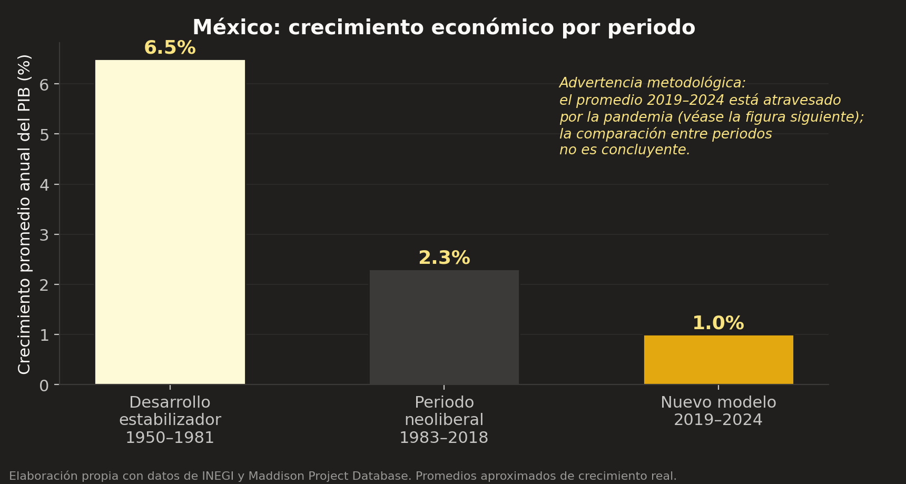
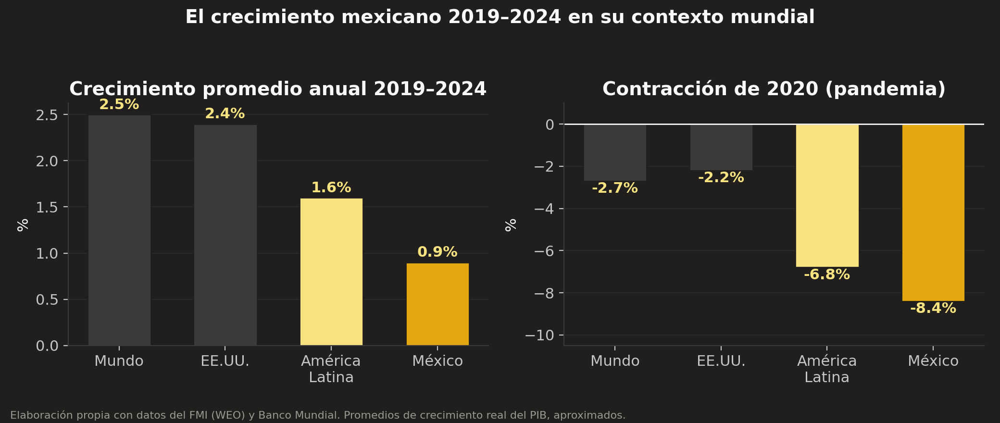
Pero nótese lo que esta corrección hace con la demostración de H2: no la debilita — la refuerza. Precisamente porque el sexenio contuvo una catástrofe de –8.4%, sin precedente desde 1932, y porque México la enfrentó sin estímulo fiscal masivo, lo esperable bajo la doctrina del derrame era una década perdida distributiva: así ocurrió en 1983–1988 y en 1995–1996, cuando choques menores dispararon la pobreza más de 15 puntos y tardó una década en recuperarse (Figura 5). Lo que ocurrió esta vez fue lo contrario: la pobreza subió apenas dos puntos en 2020 y para 2024 no había «recuperado» el nivel previo — lo había perforado, alcanzando el mínimo histórico de toda la serie, con el Gini en su mínimo también. La comparación limpia, entonces, no es de tasas de crecimiento (contaminadas por el choque) sino de respuesta distributiva ante el choque: mismas crisis externas, reglas distintas, resultados opuestos. El salario liberado y las transferencias funcionaron como amortiguador donde el salario anclado de los noventa funcionó como amplificador. Esa asimetría de respuesta —no la tasa de crecimiento— es la corroboración robusta de H2, y sobrevive a la pandemia porque existe gracias a ella.
9.7 La prueba dentro del país: 32 estados y el eco del experimento de la frontera
El contraste entre los periodos N y P tiene una debilidad estructural que un sinodal señalaría de inmediato: compara dos épocas del mismo país, y las épocas arrastran consigo todo lo que les es propio — pandemias, remesas, vientos externos. La respuesta metodológica clásica es buscar variación dentro del país y dentro del periodo: si la regla distributiva importa, donde la regla se aplicó con más intensidad el resultado debió moverse más. México ofrece exactamente ese experimento, y con fecha: el 1 de enero de 2019, el salario mínimo se duplicó en los 43 municipios de la Zona Libre de la Frontera Norte (ZLFN), mientras en el resto del país aumentó 16%. Dos territorios, una misma economía nacional, dos dosis de la misma medicina. La literatura académica ya explotó este cuasi-experimento a nivel municipal — sus hallazgos merecen recuadro propio — y este trabajo añade su propia contribución: un panel de las 32 entidades federativas con los cinco levantamientos de la ENIGH (2016–2024), construido con las series oficiales de CONEVAL e INEGI (Tabla C6 del Anexo C).
Nuestro ejercicio lleva la pregunta al nivel estatal, con un diseño de diferencias en diferencias con efectos fijos: pobreza de cada estado en cada levantamiento, controlando por las características fijas de cada entidad (efectos fijos de estado) y por los choques comunes de cada año — incluida la pandemia — (efectos fijos de año), con errores estándar agrupados por estado. El «tratamiento» son los seis estados fronterizos que contienen a la ZLFN (Baja California, Sonora, Chihuahua, Coahuila, Nuevo León y Tamaulipas). Dos advertencias de diseño, declaradas antes de los resultados como exige el capítulo II: primera, la ZLFN cubre solo una parte de cada estado fronterizo, de modo que el efecto estimado está diluido — es una cota inferior del efecto municipal verdadero; segunda, el «grupo de control» también recibió aumentos salariales crecientes desde 2019, así que lo que se estima no es el efecto del salario mínimo en general, sino el del sobreprecio fronterizo — la dosis adicional.
Los resultados son un ejemplo de manual de cómo la evidencia habla cuando se le pregunta con precisión. En la pobreza por ingresos — el canal directo del salario —, los estados fronterizos cayeron 4.2 puntos porcentuales más que el resto del país en 2022 y 3.6 puntos más en 2024, ambos estadísticamente significativos (p ≈ 0.005), respecto de su diferencia en 2018. La prueba de honestidad del diseño está en el año previo: el coeficiente de 2016 es pequeño y no significativo — no había tendencia diferencial antes del tratamiento; la brecha nace exactamente cuando nace la política (Figura 11). En la pobreza multidimensional, en cambio, el efecto diferencial es nulo — y este contraste, lejos de incomodar a la tesis, la afina: la duplicación salarial movió el componente que el salario puede mover (el ingreso) y no movió el que no depende de él (las carencias sociales, dominadas en este periodo por el colapso nacional del acceso a la salud que la sección 9.8 documenta). El instrumento dejó su huella exactamente donde su mecanismo lo predice, y en una magnitud — 3.6 a 4.2 puntos estatales — coherente con los 2.6 a 3.0 puntos que Campos-Vázquez y Esquivel estimaron a nivel municipal con microdatos.
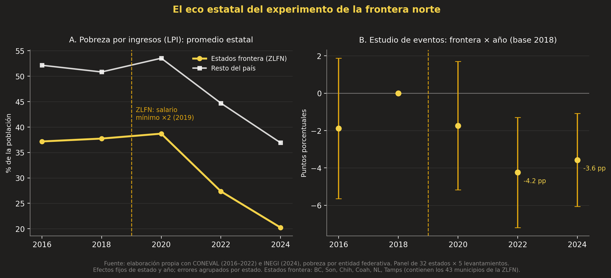
Lo que este ejercicio añade a la demostración de H2 es la pieza que faltaba: la dosis-respuesta. El contraste N vs. P mostró que cambiar las reglas cambió los resultados en el tiempo; el contraste fronterizo muestra que aplicar la misma regla con el doble de intensidad produjo el doble efecto en el espacio, dentro del mismo periodo y bajo los mismos choques nacionales. Una hipótesis causal que sobrevive en ambas dimensiones — temporal y territorial — con pre-tendencias limpias, es mucho más difícil de atribuir a la casualidad. Declaramos también los límites: seis estados tratados son pocos conglomerados para la inferencia asintótica (la significancia debe leerse con esa cautela); las estimaciones estatales de la ENIGH tienen su propio error muestral; y el diseño no separa el efecto del salario mínimo fronterizo del de otras políticas regionales simultáneas (la reducción del IVA fronterizo, sobre todo — aunque Campos-Vázquez y Esquivel muestran que ésta operó sobre precios, no sobre ingresos laborales). Con esas cautelas asentadas: el experimento natural mexicano no es solo una comparación de sexenios; es un país que, entre 2019 y 2024, corrió el mismo experimento a dos intensidades distintas y obtuvo dos resultados proporcionales. Las reglas importan, y la dosis también.
Nota metodológica. Especificación: pobreza(i,t) = α(i) + λ(t) + β·(Frontera(i) × Post2019(t)) + ε(i,t), MCO con efectos fijos de estado y año, errores agrupados por entidad (32 conglomerados). El estudio de eventos sustituye el término DiD por interacciones Frontera × año con 2018 como base. Resultados completos para pobreza por ingresos (LPI): β agrupado = −2.24 pp (EE 1.62; el año 2020, atravesado por la pandemia, atenúa el promedio); por año: 2016: −1.9 (EE 1.9, n.s.); 2020: −1.7 (n.s.); 2022: −4.2 (EE 1.5, p=0.005); 2024: −3.6 (EE 1.3, p=0.005). Pobreza multidimensional: β ≈ 0 en todas las especificaciones. Datos: Tabla C6 y `analisis/2026-07-25_panel-pobreza-estatal_datos.csv`; código Python (statsmodels): `analisis/2026-08-25_panel-zlfn_did.py`; salida completa de las regresiones en `analisis/2026-08-25_panel-zlfn_resultados.log`.
9.8 El interrogatorio de la contraparte: confounders y matices
Una demostración honesta enumera lo que podría estarla inflando. Cinco descargos que un sinodal exigiría:
- Remesas. Alcanzaron máximos históricos (más de 60,000 millones de dólares anuales hacia 2023) y benefician directamente a hogares pobres. Descargo parcial: las remesas también crecieron durante el Periodo N sin producir quiebres distributivos comparables, y la descomposición del ingreso muestra al salario formal como motor principal.
- T-MEC y nearshoring. Viento externo favorable al empleo manufacturero. Cierto — y compatible con H2: el mismo viento sopló para el TLCAN en los noventa sin efectos distributivos semejantes, porque el salario estaba institucionalmente anclado.
- Demografía. El bono demográfico —menos dependientes por trabajador— empuja el ingreso per cápita de los hogares con independencia de la política. Descargo: el bono opera desde los años noventa; no explica un quiebre fechado en 2019.
- Contexto regional. La pobreza también cayó en América Latina tras la pandemia: la CEPAL estima 27.3% regional en 2023, el nivel más bajo registrado. ¿Es México solo un pasajero de la ola regional? Dos hechos dicen que no. Primero, la propia CEPAL atribuye la reducción regional de 2024 principalmente a México y, en menor medida, a Brasil. Segundo, el otro gran contribuyente — Brasil — llegó ahí por la misma vía que México: revalorización del salario mínimo y expansión de transferencias (Bolsa Família), es decir, reglas distributivas deliberadas. El contexto regional no diluye a H2: la duplica — los dos países que más pobreza redujeron son los dos que más movieron sus reglas distributivas.
- Costos del periodo: el déficit fiscal de 2024 (~5.7% del PIB, el mayor desde los ochenta), el debilitamiento de contrapesos institucionales —incluida la desaparición del propio CONEVAL, que este trabajo registra como un costo serio para la rendición de cuentas—, y sobre todo la salud: la carencia por acceso a servicios de salud saltó de 16.2% (2018) a 39.1% (2022) tras la fallida transición INSABI, y en 2024 apenas retrocedió parcialmente (~34%). Nuestra tesis no necesita idealizar al Periodo P: necesita el hecho, robusto a todos estos matices, de que las reglas distributivas movieron los indicadores distributivos. Un periodo puede ganar el capítulo del ingreso y estar perdiendo el de un derecho social — ambas cosas quedan asentadas.
- La caída no empieza en 2018. Con la serie oficial de Gini corregida, la desigualdad ya venía bajando antes del Periodo P: el Gini con transferencias pasó de 0.449 (2016) a 0.426 (2018) —2.3 puntos en dos años— y de ahí a 0.391 (2024) —3.5 puntos en seis—. Por año, la caída previa fue más rápida. Lo reportamos porque la regla autoimpuesta de este trabajo lo exige, y añadimos las dos precisiones que el dato admite: primera, el levantamiento de 2016 arrastra un corte de comparabilidad conocido en la ENIGH, lo que aconseja no leer ese tramo como tendencia limpia; segunda, y más importante para H2, lo que distingue al Periodo P no es la pendiente sino la resistencia — es el único tramo de la serie en que la desigualdad sigue cayendo a través de una recesión de −8.4%, mientras que en 1983 y 1995 choques menores revirtieron toda mejora previa. La hipótesis de este capítulo nunca fue «cayó más rápido»: fue «las reglas distributivas importan», y una caída que sobrevive a la pandemia la sostiene mejor que una caída veloz en aguas tranquilas.
- Continuidad metodológica. La medición 2024 la hizo el INEGI tras la extinción del CONEVAL, con la misma metodología y la misma ENIGH; el dato es sólido, pero la pérdida del evaluador autónomo obliga a la vigilancia ciudadana de las series futuras. Lo decimos con claridad porque una tesis que celebra un dato debe ser la primera en proteger la credibilidad de quien lo mide.
9.9 El factor corrupción: el impuesto invisible
Falta en este expediente una variable que el lector mexicano echará de menos y que la econometría maneja mal: la corrupción. Conviene decir primero por qué es difícil, y luego por qué aun así importa. Es difícil porque la corrupción, por definición, no deja factura: lo que se mide son percepciones (el Índice de Percepción de la Corrupción de Transparencia Internacional, donde México oscila entre 26 y 31 puntos sobre 100 y ronda los lugares 126–140 de 180 países) o casos descubiertos — y un país que destapa más casos puede parecer más corrupto que uno que los entierra mejor. Con esa advertencia, las estimaciones disponibles (Banco Mundial, IMCO, CEEY) sitúan el costo de la corrupción mexicana entre 2% y 10% del PIB anual, y su incidencia es regresiva: el hogar pobre paga proporcionalmente más en «mordidas» por trámites y servicios que el hogar rico, que en cambio accede a la corrupción de mayor escala — la que compra contratos, jueces y leyes.
Para nuestra demostración, la distinción analítica útil es entre corrupción de flujo y corrupción de acervo. La de flujo es el desvío de recursos corrientes: la Estafa Maestra del sexenio de Peña Nieto (~7,800 millones de pesos triangulados vía universidades), los sobornos de Odebrecht, y —hay que decirlo con la misma vara— Segalmex en el sexenio de López Obrador (~15,000 millones de pesos, el mayor escándalo del Periodo P), junto con el ~80% de contratos por adjudicación directa y la opacidad de las obras asignadas a las fuerzas armadas. La de acervo es otra cosa: es la de la sección 9.3 — subastas anuladas y readjudicadas, monopolios transferidos con exclusividad regulatoria, rescates socializados. La corrupción de flujo roba el presupuesto de un año; la de acervo instala rentas permanentes que fluyen durante décadas hacia sus beneficiarios y reordenan la cúspide patrimonial del país. En términos distributivos, la segunda es órdenes de magnitud más consecuente, aunque la primera domine los titulares.
¿Cómo afecta esto al contraste N vs. P? En ambas direcciones, y lo registramos con honestidad. Contra el Periodo N: la corrupción de acervo fue constitutiva del modelo — la Salinastroika de la sección 9.3 no fue una anomalía del diseño sino el diseño. Contra el Periodo P: la bandera anticorrupción no se tradujo en mejora medible de los índices de percepción (México no avanzó en el IPC entre 2018 y 2024), Segalmex demostró que la austeridad no inmuniza, y la militarización de la obra pública redujo la fiscalización. A favor del Periodo P, un mecanismo concreto y verificable: la dispersión directa de las transferencias a la cuenta bancaria del beneficiario eliminó estructuralmente al intermediario — el «moche» del líder, la clientela del padrón condicionado — que durante décadas fue el impuesto privado sobre la política social. El balance neto de la corrupción entre periodos queda, como corresponde, en la columna de lo no concluyente; lo que sí queda establecido es su papel de mecanismo: la corrupción es la forma concreta que toma la captura política (Gilens y Page, capítulo V) en un país donde las instituciones de contrapeso son jóvenes o capturables. Un capitalismo limitado exige, por eso mismo, no solo el impuesto del capítulo VIII sino los órganos autónomos que lo blinden — y México acaba de perder varios.
9.10 Lo que el caso México no prueba
La honestidad argumentativa exige delimitar el alcance de la corroboración. El experimento mexicano no prueba: (a) que el modelo del Periodo P sea sostenible fiscalmente — el déficit de 2024 y la fragilidad de PEMEX son pasivos reales cuya factura puede presentarse en esta década; (b) que la mejora continúe sin crecimiento — la pre-distribución salarial tiene techo: cuando el salario mínimo alcance a la mediana, el instrumento se agota y solo el crecimiento de la productividad puede seguir empujando; (c) que las transferencias universales sean el diseño óptimo — la sección 9.5 dejó abierto ese debate técnico legítimo; ni (d) nada sobre el impuesto patrimonial, que México no ha ensayado. Lo que sí prueba —y es exactamente lo que H2 necesitaba— es la proposición contrafáctica que el neoliberalismo local presentaba como imposible: que un país puede duplicar el salario mínimo real, expandir transferencias, atravesar la peor recesión en un siglo, y aun así ver caer la pobreza y la desigualdad a mínimos históricos. El costo pronosticado no llegó; el beneficio pronosticado como imposible, sí.
9.11 La agenda pendiente: el límite que México aún no ensaya
Si el lector acepta el veredicto de H2, la pregunta natural es cuánto margen queda. La respuesta del 8.5 se vuelve aquí cuantitativa — y la sección 9.3 le añade su fundamento moral específico: México combina la recaudación más baja de la OCDE, ausencia total de impuesto a herencias, predial testimonial, y una cúspide patrimonial cuya acta de nacimiento es, caso por caso documentado, la concesión estatal, la exclusividad regulatoria o el rescate público. Si en algún país del mundo el argumento de la co-producción social de la riqueza (capítulo VII) es literal y no metafórico, es este: buena parte de la riqueza extrema mexicana no fue co-producida por la sociedad en el sentido difuso de Simon — fue directamente transferida por el Estado en nombre de esa sociedad, sin que la contraprestación fiscal haya llegado jamás. El Periodo P demostró que mover las reglas del piso (salario, transferencias) transforma los indicadores; la tesis de este trabajo señala el siguiente movimiento: las reglas del techo. Esa es, en términos de investigación, la hipótesis que el México de la próxima década podría poner a prueba — y la razón por la que este documento termina en pregunta abierta y no en profecía.
Capítulo X. Conclusiones
Recapitulemos el juicio completo, con la serenidad de quien escuchó a las dos partes.
Sobre H1 (empírica): corroborada con matiz importante. En las economías capitalistas centrales, la generación de riqueza posterior a 1980 es real e histórica —negar el Gran Enriquecimiento sería faltar a la evidencia— y su concentración en la cúspide es igualmente real e histórica; ambas cosas son ciertas a la vez, y el debate público insiste en obligarnos a elegir una: ese es su error fundamental. La caída de la pobreza extrema mundial, también real, no puede anotarse íntegra en la cuenta del capitalismo, porque su principal contribuyente fue una economía híbrida dirigida por el Estado (sección 4.1). El matiz que la evidencia nos impuso: la frase inicial «ha beneficiado solo a unos cuantos» es empíricamente insostenible en su literalidad — miles de millones se beneficiaron. La formulación defendible, y la que este trabajo defiende, es otra: los beneficios fueron reales pero radicalmente desproporcionados, y la desproporción es creciente, autorreforzante (r > g) y políticamente corrosiva (captura).
Sobre H2 (causal): corroborada. La comparación 1945–1979 vs. 1980–hoy en Occidente, la variación entre países (nórdicos vs. anglosajones) y, sobre todo, el experimento natural mexicano convergen: la distribución responde a reglas, no a leyes naturales del mercado. Donde el salario mínimo se ancla por decreto, la pobreza se estanca por décadas; donde se libera, cae en años — con el mismo país, la misma gente, e incluso atravesando la peor recesión global en un siglo, que en episodios anteriores del propio país habría significado una década perdida distributiva.
Sobre H3 (normativa): defendida. La acumulación ilimitada no sobrevive al examen: su mejor defensa filosófica (Nozick) requiere una historia limpia y una producción aislada que no existen; el criterio rawlsiano la condena en cuanto deja de beneficiar a los peor situados; y la premisa de la co-producción social (Simon, Robeyns) funda el derecho de la sociedad a recuperar su parte. Las tres objeciones prácticas —innovación, fuga, arbitrariedad— admiten respuestas de diseño institucional, no refutan el principio.
La síntesis final: el capitalismo es un horno extraordinario con un reglamento de reparto escrito por los que más pan se llevan. No proponemos apagar el horno — el siglo XX enseñó a qué temperatura se congela una sociedad sin él. Proponemos reescribir el reglamento: mercado y propiedad hasta donde sirven a todos; límite y devolución a partir del punto en que la fortuna deja de ser premio al esfuerzo y se convierte en poder sobre los demás. No es una utopía: es, aproximadamente, lo que Occidente hizo en su mejor época y lo que México empezó a ensayar, con instrumentos todavía tímidos, en la nuestra.
10.1 Limitaciones de este trabajo y agenda de investigación
Toda investigación honesta termina midiendo su propia sombra. Este trabajo tiene al menos cinco limitaciones que el lector debe cargar junto con sus conclusiones. Primera: el caso México es un experimento natural, no controlado — por rigurosos que sean los descargos de las secciones 9.6 y 9.8, no puede excluirse del todo que factores no observados expliquen parte del quiebre distributivo; la corroboración de H2 es fuerte, no definitiva. Segunda: el periodo L es corto (seis-ocho años contra treinta y seis); la historia económica está llena de mejoras distributivas que una crisis revirtió — la propia serie mexicana de los noventa lo muestra. La prueba completa requiere observar el ciclo entero, incluida la siguiente recesión. Tercera: la tesis H3 se defendió contra sus tres objeciones más fuertes, pero no contra todas — quedan pendientes, entre otras, la objeción de la valuación de activos ilíquidos (¿cómo se tasa anualmente una empresa no cotizada?), la constitucional mexicana (proporcionalidad tributaria del artículo 31) y la de economía política (¿qué coalición aprueba un impuesto contra quienes financian campañas?). Cuarta: los datos de riqueza en la cúspide son los más frágiles de toda la estadística económica; las cifras de WID para países sin buenos registros fiscales —México entre ellos— combinan encuestas, listas de milmillonarios y supuestos de imputación con márgenes de error amplios. Quinta: este trabajo argumenta desde la teoría de la justicia y la evidencia distributiva; no modeló formalmente los efectos de equilibrio general de un impuesto patrimonial en México — esa es, precisamente, la primera línea de la agenda futura, y una donde las herramientas cuantitativas del autor (microsimulación con la ENIGH, datos del SAT anonimizados) tienen trabajo por delante.
La agenda de investigación que este documento abre, en orden de madurez: (i) microsimulación de recaudación y efectos distributivos de un impuesto a herencias extremas en México con la ENIGH 2024; (ii) análisis de la elasticidad de la base patrimonial mexicana usando la experiencia de la eliminación de la tenencia y las amnistías fiscales como cuasi-experimentos; (iii) seguimiento de la serie de pobreza 2026 en adelante — la primera medición íntegramente pos-CONEVAL será el test de estrés de la credibilidad estadística nacional; (iv) el diseño constitucional del límite: cómo blindar un impuesto patrimonial ante la Corte con la doctrina de proporcionalidad vigente.
Y como toda conversación filosófica debe terminar abriéndose, no cerrándose, dejamos al lector tres preguntas para seguir pensando: si aceptas un límite a la riqueza, ¿aceptarías también un piso garantizado — son las dos caras del mismo principio? ¿Dónde pondrías tú el umbral, y con qué criterio lo defenderías ante quien lo considere arbitrario? Y la más incómoda: ¿cuánto de tu propia prosperidad se debe a tu esfuerzo, y cuánto al lugar y momento en que naciste?
Epílogo. La pregunta detrás de la pregunta
Un cierre en otro registro — porque después de sesenta páginas de datos y silogismos, queda un residuo que ni los datos ni los silogismos tocan.
¿Por qué nos importa la desigualdad? La respuesta económica ya se dio: erosiona la movilidad, captura la democracia, desperdicia bienestar. Pero debajo hay una respuesta más vieja, que los existencialistas —compañía predilecta de quien encargó esta investigación— formularían así: porque la desigualdad extrema es un régimen de sentido, no solo de recursos. Camus escribió que juzgar si la vida vale la pena vivirse es la pregunta fundamental de la filosofía; una sociedad donde el punto de partida decide casi todo el trayecto responde esa pregunta por millones de personas antes de que puedan hacérsela. La pobreza heredable no es solo carencia de bienes: es la confiscación anticipada de posibilidades — de los futuros posibles que hacen que una vida sea un proyecto y no una condena. Sartre diría que el ser humano está condenado a ser libre; la miseria estructural es el único indulto de esa condena, y es un indulto que nadie pidió.
Del otro lado de la escala, la acumulación sin límite plantea su propia pregunta existencial, que Unamuno habría reconocido: la del sentido del exceso. La fortuna número diez mil millones no compra nada que la número mil no comprara ya; a partir de cierto punto, la acumulación no persigue bienes sino posición — ser más que otros, pesar más que otros — y esa persecución no tiene estado de saciedad porque su objeto es relativo por definición. El limitarianismo de Robeyns, leído existencialmente, no es solo una política fiscal: es la sugerencia de que también al rico le iría mejor en una sociedad donde la carrera tuviera meta — donde el excedente regresara al mundo común que lo hizo posible y el resto de la vida quedara libre para lo que el dinero, pasado el umbral, ya no puede hacer.
Cioran, siempre el más oscuro de la compañía, objetaría que ninguna arquitectura institucional redime a la especie. Concedámosle la mitad: ningún impuesto fabrica sentido, ninguna transferencia elimina el absurdo. Pero la otra mitad es nuestra: entre las cosas que sí están en manos humanas —Camus lo demostró eligiendo la rebeldía sobre el suicidio y sobre la esperanza falsa— está el reparto del pan de la panadería con que abrió este trabajo. No podemos decretar que la vida tenga sentido; podemos decretar que nadie quede excluido de buscárselo por haber nacido en la fila equivocada. Eso, exactamente eso, es lo que este documento ha querido decir con sus sesenta páginas de gráficas doradas sobre fondo oscuro: que la inmensidad —la palabra favorita de estas conversaciones— no está solo en el cosmos que otras noches hemos visualizado juntos; está en la diferencia, enteramente humana y enteramente corregible, entre una sociedad que hornea para diez y una que hornea para todos.
Anexo A. Las fuentes: historia, autenticidad y sesgos declarados
Ningún dato es mejor que la institución que lo produce. Este anexo somete a las propias fuentes al estándar del capítulo II: quién las creó, cómo se financian, qué críticas han recibido.
A.1 Banco Mundial — Poverty and Inequality Platform (PIP)
Creado en Bretton Woods (1944) para la reconstrucción de posguerra; hoy, principal productor de estadísticas globales de pobreza (línea internacional desde 1990, con Ravallion como arquitecto). Fortalezas: cobertura de 170+ países, metodología pública, revisiones documentadas (la de junio de 2025, que elevó la línea a $3.00 con PPA 2021, publicó su papel técnico completo — Foster, Jolliffe et al.). Críticas serias que el lector debe conocer: su gobernanza está dominada por los países ricos (el voto es proporcional al capital aportado y su presidente ha sido siempre designado por EE.UU.), y autores como Hickel o Reddy sostienen que la línea internacional es demasiado baja y embellece el progreso. Uso en este trabajo: series de pobreza global, siempre señalando el corte metodológico de 2025 y complementando con la línea alta de $8.30.
A.2 World Inequality Database (WID.world)
Nace del proyecto de Piketty y Saez (2003) de reconstruir la participación de los ingresos altos con registros fiscales en lugar de encuestas — la innovación que reveló la concentración que las encuestas no veían. Coordinada desde la Paris School of Economics con Emmanuel Saez y Gabriel Zucman (Berkeley); financiamiento público y de fundaciones, datos y código abiertos. Críticas: sus estimaciones para EE.UU. fueron disputadas por Auten y Splinter (economistas del gobierno estadounidense), que calculan un aumento menor del top 1% tras impuestos; la discusión técnica sigue abierta y este trabajo usa las series pre-impuestos, donde el desacuerdo es menor. Sesgo declarado: sus fundadores abogan públicamente por impuestos a la riqueza; su transparencia metodológica total es el contrapeso.
A.3 CONEVAL (2005–2025) e INEGI
El CONEVAL fue una criatura institucional notable: creado por la Ley General de Desarrollo Social (2004) con investigadores académicos elegidos por concurso, produjo desde 2008 la medición multidimensional de pobreza (metodología Alkire-Foster adaptada) que se volvió referencia mundial — el propio usuario de esta investigación trabajó con sus datos en la CNBV para los indicadores de inclusión financiera. Midió sin complacencia a todos los gobiernos: documentó el estancamiento del periodo neoliberal y también le corrigió cifras al gobierno de López Obrador. Su extinción en 2024–2025, con transferencia de funciones al INEGI, es —lo decimos sin rodeos— una pérdida de arquitectura de contrapesos, mitigada por dos hechos: el INEGI conserva autonomía constitucional (desde 2008), y la medición 2024 mantuvo íntegra la metodología y la ENIGH como fuente, lo que preserva la comparabilidad de la serie. El INEGI mismo (1983; autónomo desde 2008) goza de credibilidad técnica internacional de primer nivel. Uso en este trabajo: toda la serie mexicana de pobreza, carencias y Gini.
A.4 Maddison Project y Our World in Data
El Maddison Project (Universidad de Groninga) continúa la obra de Angus Maddison (1926–2010), el historiador económico que reconstruyó el PIB per cápita de todos los países hasta el año 1 d.C.; es la fuente estándar para el crecimiento de muy largo plazo, con la advertencia de que los datos pre-1950 son estimaciones eruditas, no mediciones. Our World in Data (Universidad de Oxford, fundada por Max Roser, financiada por donaciones filantrópicas y sin publicidad) no produce datos primarios: los cura, documenta y visualiza con estándares de transparencia ejemplares; se le critica ocasionalmente un optimismo de línea editorial (su lema es documentar el progreso), crítica que no afecta a los datos sino a la selección de énfasis.
A.5 Fuentes con posición declarada, usadas con esa advertencia
El Economic Policy Institute (EPI, 1986) es un think tank estadounidense parcialmente financiado por sindicatos: su serie productividad-salarios es metodológicamente sólida pero su selección de deflactores ha sido disputada por críticos conservadores (Feldstein); la usamos porque la dirección del desacople sobrevive a cualquier deflactor razonable. Oxfam (Oxford, 1942) publica los datos de concentración más citados por el activismo; sus informes anuales se construyen sobre el Global Wealth Report de Credit Suisse/UBS y han recibido críticas metodológicas legítimas (el uso de riqueza neta hace aparecer como «pobre» a un graduado occidental endeudado); por eso este trabajo cita las magnitudes de WID, no de Oxfam. En la orilla opuesta, Fraser Institute y Heritage Foundation (índices de libertad económica, financiamiento empresarial y conservador) aparecen en el capítulo IV como la mejor artillería de la defensa, con su sesgo igualmente declarado. La regla de este trabajo fue simétrica: toda fuente militante, de cualquier bando, se usa solo para su mejor dato y nunca como árbitro.
A.6 Los clásicos
Las obras filosóficas y económicas citadas (Smith 1759/1776; Marx 1867; Polanyi 1944; Hayek 1944/1945; Rawls 1971; Nozick 1974; Friedman 1962/1980; Piketty 2013/2019; Milanović 2016; Saez y Zucman 2019; Robeyns 2024; Chetty et al. 2014–2017; Gilens y Page 2014; Corak 2013; Simon 2000; Nordhaus 2004) se citan de sus ediciones originales o de sus publicaciones académicas arbitradas; la bibliografía final da las referencias completas. Todas son verificables y ninguna es apócrifa: cuando una cita célebre resultó de autenticidad dudosa, se omitió — el lector notará la ausencia de varias frases famosas que internet atribuye sin fundamento a Smith, Churchill o Einstein.
A.7 Guía rápida: cómo leer críticamente una estadística distributiva
Destilamos el método de este trabajo en ocho preguntas que el lector puede aplicar a cualquier cifra sobre pobreza o desigualdad que encuentre en el debate público:
- ¿Nivel o tendencia? Los niveles dependen de convenciones (líneas, PPA); las tendencias son más robustas. Desconfíe de quien discute niveles como si fueran hechos brutos.
- ¿Absoluto o relativo? «La pobreza cayó» y «la desigualdad creció» pueden ser ambas verdaderas; quien presenta una como refutación de la otra está confundiendo métricas.
- ¿Ingreso o riqueza? La riqueza está siempre mucho más concentrada. Un Gini de ingreso moderado puede convivir con una concentración patrimonial extrema.
- ¿Encuesta o registro fiscal? Las encuestas pierden a los ricos; los registros fiscales pierden a la informalidad. La cifra seria declara su fuente y su punto ciego.
- ¿Antes o después de impuestos y transferencias? La diferencia entre ambas es, exactamente, el efecto del Estado — y el corazón de este debate.
- ¿Hubo corte metodológico en la serie? Toda comparación que cruza un cambio de método sin declararlo es sospechosa por construcción.
- ¿Quién produce el dato y quién lo paga? No para descartarlo (falacia genética), sino para saber qué revisar dos veces.
- ¿Qué pasaría con la conclusión si el dato variara 20%? Las conclusiones de este trabajo sobreviven a esa prueba de estrés; las que no la sobreviven no deberían publicarse.
Anexo B. Glosario
| Término | Definición |
|---|---|
| Capitalismo limitado | Régimen que conserva mercado, propiedad y competencia pero impone un techo efectivo a la acumulación individual de patrimonio mediante imposición progresiva extrema por encima de un umbral. |
| Coeficiente de Gini | Medida de desigualdad entre 0 (igualdad total) y 1 (concentración total), calculada sobre toda la distribución del ingreso o la riqueza. |
| Curva del elefante | Gráfico de Lakner-Milanović del crecimiento del ingreso real por percentil global (1988–2008), con forma de elefante alzando la trompa. |
| Limitarianismo | Doctrina ética (Robeyns) según la cual existe un punto a partir del cual tener más riqueza carece de valor moral para su titular y daña a la sociedad. |
| Línea internacional de pobreza | Umbral del Banco Mundial para pobreza extrema: $3.00/día por persona en PPA 2021 (antes $2.15 en PPA 2017), desde junio de 2025. |
| PPA (paridad de poder adquisitivo) | Tipo de cambio teórico que iguala el costo de una canasta de bienes entre países, para comparar ingresos reales. |
| Pobreza multidimensional | Metodología mexicana (CONEVAL, base Alkire-Foster): es pobre quien tiene ingreso insuficiente Y al menos una carencia social de seis (educación, salud, seguridad social, vivienda, servicios, alimentación). |
| Principio de diferencia | Criterio de Rawls: las desigualdades solo son justas si mejoran la posición de los miembros peor situados de la sociedad. |
| r > g | Ley de Piketty: cuando el rendimiento del capital supera al crecimiento económico, la riqueza heredada crece más rápido que los ingresos del trabajo y la concentración aumenta. |
| Razón de Palma | Ingreso del 10% superior dividido entre el del 40% inferior; alternativa al Gini más sensible a los extremos. |
| Steelman | Reconstrucción de la posición contraria en su versión más fuerte antes de criticarla; lo opuesto del hombre de paja. |
| Top income share | Porcentaje del ingreso (o riqueza) nacional capturado por un percentil superior (1%, 10%), estimado con registros fiscales. |
| Modelo de Toulmin | Estructura de seis componentes para argumentos prácticos: aserción, evidencia, garantía, respaldo, matizador y refutación. |
| Velo de ignorancia | Experimento mental de Rawls: elegir las reglas sociales sin saber qué posición ocuparás en la sociedad resultante. |
Anexo C. Tablas de datos
Series completas utilizadas en las figuras, para verificación y reutilización.
C.1 Pobreza extrema global (línea $3.00/día, PPA 2021)
| Año | % población mundial | Personas (aprox.) |
|---|---|---|
| 1990 | ≈43% | ≈2,300 millones |
| 2000 | ≈34% | ≈2,080 millones |
| 2010 | ≈21% | ≈1,480 millones |
| 2019 | ≈12% | ≈920 millones |
| 2022 | 10.5% | 838 millones |
| 2025 (nowcast) | 9.9% | ≈808 millones |
C.2 México: pobreza multidimensional (metodología CONEVAL, ENIGH)
| Indicador | 2016 | 2018 | 2020 | 2022 | 2024 |
|---|---|---|---|---|---|
| Pobreza (%) | 43.2 | 41.9 | 43.9 | 36.3 | 29.6 |
| Pobreza (millones) | 52.2 | 51.9 | 55.7 | 46.8 | 38.5 |
| Pobreza moderada (%) | 36.0 | 34.9 | 35.4 | 29.3 | 24.2 |
| Pobreza extrema (%) | 7.2 | 7.0 | 8.5 | 7.1 | 5.3 |
C.3 México: pobreza por ingresos, serie larga
| Año | % | Año | % |
|---|---|---|---|
| 1992 | 53.1 | 2010 | 52.0 |
| 1994 | 52.4 | 2012 | 52.3 |
| 1996 | 69.0 | 2014 | 53.2 |
| 1998 | 63.7 | 2016 | 50.8 |
| 2000 | 53.6 | 2018 | 49.9 |
| 2004 | 47.2 | 2020 | 52.8 |
| 2006 | 42.9 | 2022 | 43.5 |
C.4 México: distribución y desigualdad (ENIGH 2024)
| Medida | Valor |
|---|---|
| Gini del ingreso de los hogares, 2016 — sin transferencias / con transferencias | 0.499 / 0.449 |
| Gini del ingreso de los hogares, 2018 — sin / con | 0.475 / 0.426 |
| Gini del ingreso de los hogares, 2020 — sin / con | 0.468 / 0.415 |
| Gini del ingreso de los hogares, 2022 — sin / con | 0.460 / 0.402 |
| Gini del ingreso de los hogares, 2024 — sin / con | 0.450 / 0.391 |
| Participación del decil X (10% superior) en el ingreso, 2024 | 30.3% |
| Participación de los deciles I–V (50% inferior), 2024 | 23.3% |
| Salario mínimo general diario, 2018 | $88.36 |
| Salario mínimo general diario, 2025 | $278.80 (aumento real >100%) |
C.5 Riqueza global (WID, 2021)
| Grupo | % riqueza mundial | % ingreso mundial |
|---|---|---|
| 50% más pobre | 2% | 8.5% |
| 40% intermedio | 22% | 39.5% |
| 10% más rico | 76% | 52% |
| 1% más rico (subconjunto) | 38% | 19% |
C.6 México: pobreza multidimensional por entidad federativa
| Entidad | 2016 | 2018 | 2020 | 2022 | 2024 |
|---|---|---|---|---|---|
| Aguascalientes | 28.9 | 26.3 | 27.6 | 23.7 | 17.1 |
| Baja California | 22.6 | 23.6 | 22.5 | 13.4 | 9.9 |
| Baja California Sur | 22.9 | 18.6 | 27.6 | 13.3 | 10.2 |
| Campeche | 45.7 | 49.0 | 50.5 | 45.1 | 36.7 |
| Coahuila | 27.1 | 25.5 | 25.6 | 18.2 | 12.4 |
| Colima | 32.5 | 30.4 | 26.7 | 20.5 | 15.0 |
| Chiapas | 77.9 | 78.0 | 75.5 | 67.4 | 66.0 |
| Chihuahua | 30.7 | 26.6 | 25.3 | 17.6 | 15.1 |
| Ciudad de Mexico | 26.6 | 30.0 | 32.6 | 24.0 | 19.7 |
| Durango | 37.2 | 38.8 | 38.7 | 34.3 | 27.9 |
| Guanajuato | 39.4 | 41.5 | 42.7 | 33.0 | 26.0 |
| Guerrero | 66.8 | 67.9 | 66.4 | 60.4 | 58.1 |
| Hidalgo | 56.9 | 49.9 | 50.8 | 41.0 | 35.3 |
| Jalisco | 30.5 | 27.8 | 31.4 | 21.8 | 18.6 |
| Mexico | 46.6 | 41.8 | 48.9 | 42.9 | 31.2 |
| Michoacan | 54.2 | 46.2 | 44.5 | 41.7 | 34.3 |
| Morelos | 46.7 | 48.5 | 50.9 | 41.1 | 35.4 |
| Nayarit | 38.1 | 35.7 | 30.4 | 29.3 | 23.5 |
| Nuevo Leon | 18.8 | 19.4 | 24.3 | 16.0 | 10.6 |
| Oaxaca | 68.0 | 64.3 | 61.7 | 58.4 | 51.6 |
| Puebla | 58.1 | 58.0 | 62.4 | 54.0 | 43.4 |
| Queretaro | 29.7 | 26.4 | 31.3 | 21.7 | 16.3 |
| Quintana Roo | 31.7 | 30.2 | 47.5 | 27.0 | 17.7 |
| San Luis Potosi | 44.1 | 42.1 | 42.8 | 35.5 | 30.4 |
| Sinaloa | 30.5 | 31.0 | 28.1 | 21.6 | 17.0 |
| Sonora | 27.0 | 26.7 | 29.9 | 21.7 | 14.1 |
| Tabasco | 53.8 | 56.4 | 54.5 | 46.5 | 34.8 |
| Tamaulipas | 32.0 | 34.5 | 34.9 | 26.8 | 20.2 |
| Tlaxcala | 55.9 | 51.0 | 59.3 | 52.5 | 40.8 |
| Veracruz | 60.5 | 60.2 | 58.6 | 51.7 | 44.5 |
| Yucatan | 45.5 | 44.0 | 49.5 | 38.8 | 26.6 |
| Zacatecas | 50.2 | 49.2 | 45.8 | 44.2 | 36.4 |
Anexo D. Guía de discusión socrática
Este trabajo nació para pensar, no para archivarse. Las siguientes preguntas —organizadas por capítulo— sirven para seminarios, círculos de lectura o para el diálogo del lector consigo mismo. No tienen respuesta oficial; algunas incomodan deliberadamente a la propia tesis del documento.
Sobre los alegatos (capítulos IV y V)
- Si mañana se demostrara que la caída de la pobreza global se debió principalmente al Estado chino y no al mercado, ¿qué quedaría del alegato de la defensa? ¿Y si se demostrara lo contrario, qué quedaría del de la acusación?
- ¿Puede una persona aceptar íntegramente los datos de la Figura 1 (pobreza a la baja) y de la Figura 2 (riqueza concentrada) y aún así llegar a una conclusión opuesta a la de este trabajo? ¿Qué premisa normativa tendría que sostener?
- La curva del elefante muestra que las clases medias de los países ricos se estancaron mientras los pobres de Asia ascendían. Si tuvieras que elegir entre esos dos resultados, ¿con qué criterio lo harías? ¿Es esa elección la que hicieron los electorados occidentales en la última década?
Sobre la justicia (capítulo VII)
- Tras el velo de la ignorancia de Rawls, ¿qué límite de riqueza elegirías sin saber si serás el multimillonario o el jornalero? Sé honesto: ¿tu respuesta cambia cuando recuerdas quién eres?
- Nozick preguntaría: si un millón de personas paga voluntariamente por ver a un artista, ¿qué exactamente autoriza al Estado a tomar una parte creciente de esa suma? Responde sin usar la palabra «sociedad» — y luego observa si pudiste.
- Herbert Simon estimó que el 90% de tu ingreso se debe al capital social que no creaste. Si es verdad, ¿qué porcentaje de tu ingreso «mereces»? ¿Y qué se sigue —o no se sigue— de esa cifra para el impuesto que deberías pagar?
- La aporofobia de Cortina: haz el experimento mental de sustituir, en cualquier discusión sobre pobreza que presencies, la palabra «pobres» por «personas idénticas a ti con peor suerte inicial». ¿Cambia el tono de la discusión? ¿Qué revela eso?
Sobre la tesis (capítulo VIII)
- ¿Dónde pondrías tú el umbral del límite: 100 millones, 1,000 millones, 10,000 millones de pesos? Defiende tu cifra ante alguien que la considere confiscatoria y ante alguien que la considere tímida — el orden de los interlocutores importa menos que sobrevivir a ambos.
- Si el límite provoca que un gran empresario se lleve su siguiente empresa a Texas, ¿el país perdió más de lo que ganó? ¿Cómo lo medirías? ¿Cambia tu respuesta si son diez empresarios? ¿Y si es uno solo pero es el mayor contribuyente?
- La objeción 3 (¿quién decide?) se respondió con órganos técnicos autónomos. Pero México acaba de extinguir uno (CONEVAL). ¿Debilita ese hecho la respuesta del capítulo VIII? ¿Cómo diseñarías un órgano fiscal que ningún gobierno futuro pueda capturar ni extinguir?
Sobre el caso México (capítulo IX)
- El Periodo P redujo la pobreza con menor crecimiento. ¿Hasta dónde puede estirarse esa fórmula antes de toparse con su techo? ¿Qué señal empírica te indicaría que el techo llegó?
- La carencia de acceso a salud aumentó mientras la pobreza caía. ¿Puede llamarse éxito distributivo a un periodo que mejoró el ingreso y deterioró un derecho social? ¿Cómo ponderarías ambos en un solo juicio?
- Si en 2030 la pobreza volviera a subir, ¿qué diría eso de la hipótesis H2: que era falsa, o que las reglas volvieron a cambiar? ¿Qué evidencia distinguiría entre ambas lecturas? (Esta pregunta es la más importante del anexo: una hipótesis que explica cualquier resultado no explica ninguno.)
La pregunta final
- Este documento defendió que la sociedad co-produce toda gran fortuna. La pregunta espejo rara vez se hace: ¿qué obligaciones tienes tú —no el multimillonario: tú— con esa misma sociedad co-productora? Si la respuesta al rico es «devuelve», ¿cuál es la tuya?
Bibliografía
Auten, G. y Splinter, D. (2024). «Income Inequality in the United States: Using Tax Data to Measure Long-Term Trends». Journal of Political Economy, 132(7).
Banco Mundial (2025). Poverty and Inequality Platform: actualizaciones de junio y septiembre de 2025 (PPA 2021, línea de $3.00/día). Washington, D.C.
BBVA Research (2025). «México: notable avance, la pobreza en un mínimo de 29.6%». Nota de análisis, agosto de 2025.
Buchanan, J. y Tullock, G. (1962). The Calculus of Consent: Logical Foundations of Constitutional Democracy. University of Michigan Press.
Campos-Vázquez, R. M. y Esquivel, G. (2021). «The effect of doubling the minimum wage on employment and earnings in Mexico». Economics Letters, 209.
Campos-Vázquez, R. M. y Esquivel, G. (2023). «The Effect of the Minimum Wage on Poverty: Evidence from a Quasi-Experiment in Mexico». The Journal of Development Studies, 59(3).
Campos-Vázquez, R. M. y Esquivel, G. (2023). «Disentangling the Effects of Large Minimum Wage and VAT Changes on Prices: Evidence from Mexico». Labour Economics, 80.
Campos-Vázquez, R. M. y Esquivel, G. (2023). «El efecto de duplicar el salario mínimo en la brecha de género en empleo y salarios en México». El Trimestre Económico, XC(4).
CEPAL (2024). Panorama Social de América Latina y el Caribe 2024. Santiago: Naciones Unidas.
Chancel, L., Piketty, T., Saez, E. y Zucman, G. (2022). World Inequality Report 2022. Paris School of Economics / WID.world.
Chetty, R., Grusky, D., Hell, M., Hendren, N., Manduca, R. y Narang, J. (2017). «The Fading American Dream: Trends in Absolute Income Mobility since 1940». Science, 356(6336).
CONASAMI (2025). «Incremento de los salarios mínimos entre 2018 y 2024 es responsable de la mitad de la reducción de la pobreza en el periodo». Comunicado, agosto de 2025.
CONEVAL (2008–2023). Medición multidimensional de la pobreza en México, series 1992–2022. Ciudad de México.
Corak, M. (2013). «Income Inequality, Equality of Opportunity, and Intergenerational Mobility». Journal of Economic Perspectives, 27(3).
Forbes (1987–2025). The World's Billionaires, listas anuales; y Forbes México, Los millonarios de México (ediciones anuales).
Foster, E.M., Jolliffe, D., Ibarra, G.L., Lakner, C. y Tetteh Baah, S.K. (2025). «Global Poverty Revisited Using 2021 PPPs and New Data on Consumption». Policy Research Working Paper 11137, Banco Mundial.
Friedman, M. (1962). Capitalism and Freedom. University of Chicago Press.
Gilens, M. y Page, B. (2014). «Testing Theories of American Politics: Elites, Interest Groups, and Average Citizens». Perspectives on Politics, 12(3).
Hayek, F.A. (1944). Camino de servidumbre; (1945) «The Use of Knowledge in Society», American Economic Review, 35(4).
INEGI (2025). Pobreza multidimensional 2024. Comunicado de prensa 118/25, 13 de agosto de 2025; ENIGH 2024.
Lakner, C. y Milanović, B. (2016). «Global Income Distribution: From the Fall of the Berlin Wall to the Great Recession». World Bank Economic Review, 30(2).
Marx, K. (1867). El capital. Crítica de la economía política, tomo I.
McCloskey, D. (2016). Bourgeois Equality: How Ideas, Not Capital or Institutions, Enriched the World. University of Chicago Press.
Meyer, B. D. y Sullivan, J. X. (2023). «Consumption and Income Inequality in the United States since the 1960s». Journal of Political Economy, 131(2).
Milanović, B. (2016). Global Inequality: A New Approach for the Age of Globalization. Harvard University Press.
Nordhaus, W. (2004). «Schumpeterian Profits in the American Economy: Theory and Measurement». NBER Working Paper 10433.
Nozick, R. (1974). Anarchy, State, and Utopia. Basic Books.
OCDE (2012). Estudio de la OCDE sobre políticas y regulación de telecomunicaciones en México. París: OECD Publishing.
Ortiz Pardo, F. y Ortiz Pinchetti, J.A. (2018). «La lista de Forbes ya aburre: los dueños de México son los mismos desde la época de Salinas». Proceso, abril de 2018.
Piketty, T. (2013). El capital en el siglo XXI. FCE; (2019) Capital e ideología. Deusto.
Pinker, S. (2018). Enlightenment Now. Viking.
Polanyi, K. (1944). La gran transformación. FCE.
Rawls, J. (1971). A Theory of Justice. Harvard University Press.
Robeyns, I. (2024). Limitarianism: The Case Against Extreme Wealth. Astra House / Allen Lane.
Rogozinski, J. (1993). La privatización de empresas paraestatales. México: Fondo de Cultura Económica.
Saez, E. y Zucman, G. (2019). The Triumph of Injustice: How the Rich Dodge Taxes and How to Make Them Pay. W.W. Norton.
Simon, H. (2000). «UBI and the Flat Tax». Boston Review, octubre de 2000.
Smith, A. (1759). La teoría de los sentimientos morales; (1776) Investigación sobre la naturaleza y causas de la riqueza de las naciones.
Toulmin, S. (1958). The Uses of Argument. Cambridge University Press.
van Eemeren, F. y Grootendorst, R. (2004). A Systematic Theory of Argumentation: The Pragma-Dialectical Approach. Cambridge University Press.